<!doctype html>
<html lang="en">
<head>
  <meta charset="utf-8">
  <meta name="viewport" content="width=device-width, initial-scale=1">
  <title>arxiv digest — 2026-06-03</title>
  <style>
:root {
  --bg: #ffffff;
  --fg: #1f2328;
  --muted: #59636e;
  --border: #d0d7de;
  --card: #f6f8fa;
  --link: #0969da;
}
body {
  max-width: 980px;
  margin: 0 auto;
  padding: 2rem 1rem 5rem;
  font-family: -apple-system, BlinkMacSystemFont, "Segoe UI", Helvetica, Arial, sans-serif;
  line-height: 1.55;
  color: var(--fg);
  background: var(--bg);
}
a { color: var(--link); }
img { max-width: 100%; height: auto; }
pre, code { background: var(--card); border-radius: 6px; }
pre { padding: 1rem; overflow-x: auto; }
blockquote { border-left: 4px solid var(--border); padding-left: 1rem; color: var(--muted); }
details { margin: 0.6rem 0; }
summary { cursor: pointer; font-weight: 600; }
.paper-figures-scroll {
  display: flex;
  gap: 1rem;
  overflow-x: auto;
  overscroll-behavior-x: contain;
  padding: 0.75rem 0.25rem 1rem;
  margin: 1rem 0 1.25rem;
  border-top: 1px solid var(--border);
  border-bottom: 1px solid var(--border);
  scroll-snap-type: x proximity;
}
.paper-figure-card {
  flex: 0 0 min(260px, 72vw);
  scroll-snap-align: start;
  background: var(--card);
  border: 1px solid var(--border);
  border-radius: 12px;
  padding: 0.55rem;
}
.paper-figure-card img {
  display: block;
  width: 100%;
  max-height: 240px;
  object-fit: contain;
  background: white;
  border-radius: 8px;
}
.paper-figure-caption {
  display: block;
  margin-top: 0.5rem;
  color: var(--muted);
  font-size: 0.85rem;
}
.figure-strip-hint {
  color: var(--muted);
  font-size: 0.9rem;
  margin-bottom: -0.3rem;
}
</style>
  <!-- MathJax: renders $...$ inline math and $$...$$ display math, plus
       \(...\) and \[...\]. Loaded from the official CDN; works offline
       once cached. Configured to skip code/pre blocks so arxiv IDs that
       look like dollar amounts don't get mangled. -->
  <script>
    window.MathJax = {
      tex: {
        inlineMath: [['$', '$'], ['\\(', '\\)']],
        displayMath: [['$$', '$$'], ['\\[', '\\]']],
        processEscapes: true,
        processEnvironments: true
      },
      options: {
        skipHtmlTags: ['script', 'noscript', 'style', 'textarea', 'pre', 'code'],
        ignoreHtmlClass: 'tex2jax_ignore',
        processHtmlClass: 'tex2jax_process'
      }
    };
  </script>
  <script id="MathJax-script" async
    src="https://cdn.jsdelivr.net/npm/mathjax@3/es5/tex-chtml.js"></script>
</head>
<body>
<header style="background-color: #333; color: white; padding: 15px; margin-bottom: 20px;">
  <h1 style="margin: 0; font-size: 24px;">
    <a href="https://ochelpan.github.io/arXiv_clean/" style="color: white; text-decoration: none;">Main</a>
  </h1>
</header>

<h1>Daily arXiv Report</h1>

<hr>
<p>
<a href="index.html">← Index</a>
 · <a href="papers_05.html">← Previous</a> · <a href="papers_07.html">Next →</a>
</p>
<hr>

<h2>Papers 101–120</h2>
<p><a id="paper-2606.03196"></a></p>
<h3 id="towards-a-hybrid-quantum-enhanced-solution-for-densest-k-subgraph-problem"><a href="http://arxiv.org/abs/2606.03196v1">Towards a Hybrid Quantum Enhanced Solution for Densest k-Subgraph Problem</a></h3>
<p><strong>Authors:</strong> Ravi Sangwan, Prabhat Anand, M Girish Chandra<br>
<strong>Type:</strong> both · <strong>Category:</strong> quantum information and computing · <strong>PDF:</strong> <a href="https://arxiv.org/pdf/2606.03196v1">https://arxiv.org/pdf/2606.03196v1</a><br>
<strong>Analysis basis:</strong> full PDF text, analyzed in chunks</p>
<div class="figure-strip-hint">↔ Scroll figures horizontally</div>
<div class="paper-figures-scroll">
<figure class="paper-figure-card">
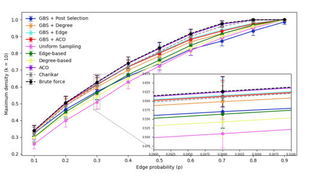
<figcaption class="paper-figure-caption"><b>Fig 1.</b> Fig. 2. Comparison of sampling and classical methods for DkSP with k = 10 in Erd˝os–Rényi random graphs with n = 30. Results are averaged over 100 random graph instances for each edge probability p.</figcaption>
</figure>
<figure class="paper-figure-card">
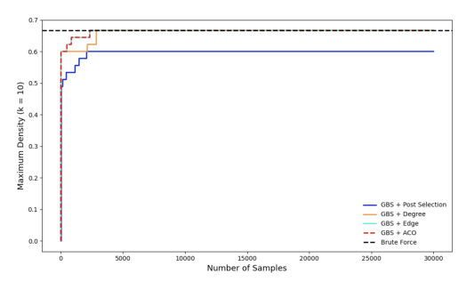
<figcaption class="paper-figure-caption"><b>Fig 2.</b> Fig. 1. Convergence of the best maximum density found for k = 10 subgraphs on a random graph with edge probability p = 0.3.</figcaption>
</figure>
<figure class="paper-figure-card">

<figcaption class="paper-figure-caption"><b>Fig 3.</b> Fig. 3. Synthetic graph with overlapping dense regions for n = 30. Colors indicate cluster membership, and overlapping nodes are highlighted in gold.</figcaption>
</figure>
<figure class="paper-figure-card">
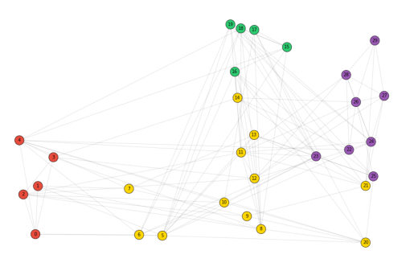
<figcaption class="paper-figure-caption"><b>Fig 4.</b> Fig. 4 visualizes the solutions obtained by different methods on a representative instance of the multiple dense-region graph. The GBS solution with post-selection differs from the brute- force optimum by four vertices, whereas Charikar’s solution differs by two vertices. In contrast, GBS with edge-based and ACO-based post-processing select the same subgraph and differ from the brute-force optimum by only one vertex. This</figcaption>
</figure>
<figure class="paper-figure-card">
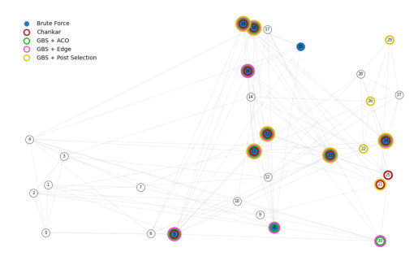
<figcaption class="paper-figure-caption"><b>Fig 5.</b> Fig. 4. Dense k = 10 subgraphs identified by different methods on the same multiple dense-region graph. The selected nodes are overlaid on a common layout for comparison.</figcaption>
</figure>
</div>
<p><strong>Summary.</strong> This paper explores using Gaussian Boson Sampling (GBS) to tackle the hard Densest k-Subgraph Problem. It finds that GBS alone is insufficient because of strict size constraints, but by coupling GBS with classical refinement techniques (like edge-based or ACO repair), the method achieves near-optimal solutions with vastly improved sampling efficiency. This highlights the power of hybrid quantum-classical frameworks for graph optimization.</p>
<p><strong>Why it may be interesting.</strong> The work demonstrates a practical, hybrid quantum-classical workflow for solving a hard combinatorial optimization problem, showing how simple classical refinement can unlock the potential of a quantum sampling primitive like GBS.</p>
<details>
<summary>Detailed structure</summary>
<p><strong>Main problem.</strong> The paper addresses the NP-hard Densest k-Subgraph Problem (DkSP), which seeks a subgraph of size k maximizing induced density.</p>
<p><strong>Main result.</strong> The combination of Gaussian Boson Sampling (GBS) with lightweight classical post-processing (like edge-based or ACO refinement) significantly improves sampling efficiency and solution quality compared to GBS post-selection alone.</p>
<p><strong>Method.</strong> A hybrid quantum-classical approach is used, where GBS generates initial, potentially incomplete, samples, which are then refined using classical greedy or meta-heuristic algorithms to enforce the correct subgraph size k.</p>
<p><strong>Model / system.</strong> The quantum model is Gaussian Boson Sampling (GBS), simulated using photonic quantum circuits. The problem is mapped onto the graph's adjacency matrix, and the objective function relates to the hafnian of principal submatrices.</p>
<p><strong>Key observables.</strong> Maximum induced density $D(S)$, sampling efficiency (samples needed for optimum), and computational cost.</p>
<p><strong>Important parameters / regimes.</strong> Target subgraph size $k$ (e.g., $k=10$), graph structure (Erdős–Rényi vs. community-structured), and post-processing parameters (e.g., ACO parameters).</p>
<p><strong>Assumptions / limitations.</strong> The core assumption is that GBS provides a useful, structured sampling bias, but this bias must be corrected by classical post-processing to overcome strict cardinality constraints.</p>
<p><strong>Figures summary.</strong> Figures compare the convergence of various methods (GBS+Post-processing vs. GBS+Post-selection vs. Classical) in finding the maximum density for DkSP on structured graphs, showing significant performance gains for the hybrid methods.</p>
<p><strong>Paper structure.</strong> The paper first defines DkSP and the GBS model, then analyzes the limitations of GBS post-selection. It systematically introduces and compares three classical post-processing techniques (degree, edge, ACO) to repair near-$k$ samples, culminating in performance benchmarks against classical and pure quantum methods.</p>
</details>
<details>
<summary>Abstract</summary>
<p>We study the application of Gaussian Boson Sampling (GBS) to the densest k-subgraph problem (DkSP). GBS with hard post-selection suffers from poor sampling efficiency due to strict cardinality constraints. To address this limitation, we introduce effective classical post-processing strategies that transform, otherwise discarded, near-k samples into feasible solutions. A comprehensive set of simulations is carried out, demonstrating that these approaches achieve near-optimal solution quality while improving sampling efficiency by approximately 4X compared to post-selection on community-structured graphs, and also post-selection often fails to reach the optimal solution on sparse random graphs even with large number of samples. Furthermore, the proposed methods perform on par with, and in some cases outperform, established classical approaches for graphs up to moderate size. Overall, the results indicate that while GBS with post-selection alone is insufficient, its combination with lightweight classical refinement can be highly effective. This underscores the potential of hybrid quantum-classical frameworks and positions GBS as a promising sampling primitive for combinatorial graph optimization.</p>
</details>
<p><sub><a href="#top">↑ back to top</a></sub></p>

<p><a id="paper-2606.03584"></a></p>
<h3 id="training-a-predictive-coding-network-on-imagenet-using-equilibrium-propagation"><a href="http://arxiv.org/abs/2606.03584v1">Training a Predictive Coding Network on ImageNet using Equilibrium Propagation</a></h3>
<p><strong>Authors:</strong> Tugdual Kerjan, Rasmus Høier, Benjamin Scellier<br>
<strong>Type:</strong> both · <strong>Category:</strong> disordered systems and neural networks · <strong>PDF:</strong> <a href="https://arxiv.org/pdf/2606.03584v1">https://arxiv.org/pdf/2606.03584v1</a><br>
<strong>Analysis basis:</strong> full PDF text, analyzed in chunks</p>
<div class="figure-strip-hint">↔ Scroll figures horizontally</div>
<div class="paper-figures-scroll">
<figure class="paper-figure-card">
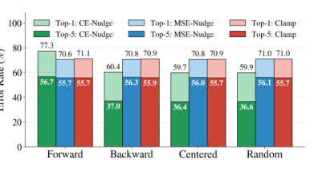
<figcaption class="paper-figure-caption"><b>Fig 1.</b> Figure 1: Comparison of perturbation approaches (CE-Nudge, MSE-Nudge and Clamp) and finite difference schemes (forward, backward, centered and random) on the VGG5 network trained on (a) CIFAR-100 and (b) ImageNet 32x32.</figcaption>
</figure>
<figure class="paper-figure-card">
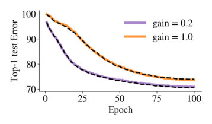
<figcaption class="paper-figure-caption"><b>Fig 2.</b> Figure 3: VGG5 trained on ImageNet 32x32 using the MSE cost function. Dif- ferent weight initialization gains for the output layer lead to significantly different results ; however, EP consistently performs comparably to BP. Solid lines and dashed lines denote EP and BP, respectively.</figcaption>
</figure>
<figure class="paper-figure-card">
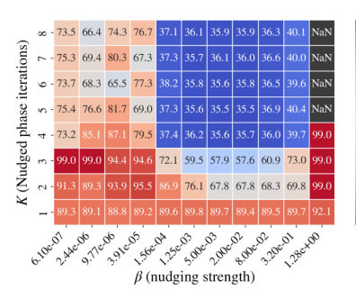
<figcaption class="paper-figure-caption"><b>Fig 3.</b> Figure 2: VGG5 network trained on CIFAR100 for 20 epochs. Sensitivity to the nudging strength (β) and num- ber of nudge iterations (K).</figcaption>
</figure>
<figure class="paper-figure-card">
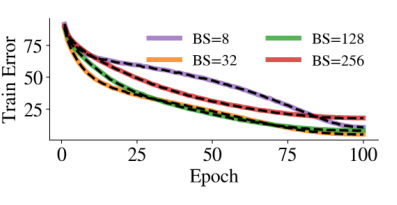
<figcaption class="paper-figure-caption"><b>Fig 4.</b> Figure 4: VGG5 trained on CIFAR100 using the MSE. Shapes of training curves depend on the batch size (BS), but not on the algorithm (EP vs BP). Solid lines denote EP and dashed lines denote BP.</figcaption>
</figure>
<figure class="paper-figure-card">
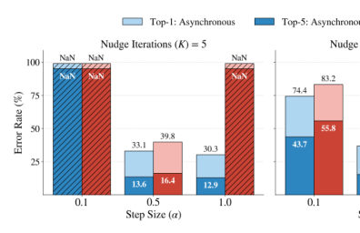
<figcaption class="paper-figure-caption"><b>Fig 5.</b> Figure 5: Test error rates obtained with the VGG5 trained on CIFAR100 using different traversal schedules (synchronous and asynchronous updates), number of nudged phase iterations K (5, 10 and 20) and step sizes α (0.1, 0.5, 1.0). NaN means that training failed and diverged, resulting in NaN values.</figcaption>
</figure>
</div>
<p><strong>Summary.</strong> This work pioneers the use of Equilibrium Propagation (EP) to train Predictive Coding Networks (PCNs) on the massive ImageNet dataset. By adapting EP's physics-based training framework, the authors achieve state-of-the-art performance, demonstrating that EP is a scalable and viable alternative to standard backpropagation for energy-based neural models.</p>
<p><strong>Why it may be interesting.</strong> The application of physics-inspired training methods like EP to complex, large-scale neural networks bridges the gap between theoretical physics models (like energy minimization) and modern AI, which is relevant for understanding complex system dynamics.</p>
<details>
<summary>Detailed structure</summary>
<p><strong>Main problem.</strong> The paper develops and demonstrates a novel training method for Predictive Coding Networks (PCNs) using Equilibrium Propagation (EP) at the large scale of ImageNet.</p>
<p><strong>Main result.</strong> They successfully trained a VGG10 PCN on full-size ImageNet, achieving a top-5 error rate of 13.23%, which is competitive with the standard backpropagation baseline.</p>
<p><strong>Method.</strong> The method combines the centered variant of EP with a novel equilibration scheme tailored for PCNs, allowing the use of physics-based training principles on large-scale deep learning models.</p>
<p><strong>Model / system.</strong> The model is a Predictive Coding Network (PCN), which is treated as an energy-based model rooted in computational neuroscience. The training framework is based on Equilibrium Propagation (EP), a physics-based training method.</p>
<p><strong>Key observables.</strong> Top-5 classification test error rate, total energy function $F$, and the equilibrium state $h(	heta, x)$.</p>
<p><strong>Important parameters / regimes.</strong> Nudging parameter ($eta$), number of nudge iterations ($K$), and the scale of the dataset (ImageNet).</p>
<p><strong>Assumptions / limitations.</strong> The primary assumption is that EP can effectively train PCNs, extending the applicability of EP beyond small-scale problems.</p>
<p><strong>Figures summary.</strong> Figures compare EP performance against backpropagation across various datasets (CIFAR, ImageNet) and show the convergence dynamics of the total energy function $F$ during the nudging process.</p>
<p><strong>Paper structure.</strong> The paper introduces EP for PCNs, details the mathematical formulation using nudging and finite differences, benchmarks the method on ImageNet 32x32, and concludes with the full-size ImageNet results, comparing performance against established baselines.</p>
</details>
<details>
<summary>Abstract</summary>
<p>Equilibrium Propagation (EP) is a physics-based training framework that has primarily been employed in energy-based models, including continuous Hopfield networks, nonlinear resistive networks and coupled phase oscillators. However, EP's practical applications have so far remained limited to relatively small-scale problems. Predictive coding networks (PCNs), another class of energy-based models rooted in computational neuroscience, are typically trained with a specialized algorithm and have likewise not yet been demonstrated at large scale. In this work, we develop an EP-based training method for PCNs which combines the centered variant of EP with a novel equilibration scheme for PCNs. Using this approach, we train a 10-layer convolutional PCN (VGG10) on full-size ImageNet, achieving 13.23\% test error rate on the top-5 classification task, close to the 12.2\% backpropagation baseline. To our knowledge, this is the first demonstration of both PCNs and EP-based training at ImageNet scale. These results significantly extend the scalability of both approaches and suggest that the primary challenges in scaling EP in other physical systems may come more from the computational properties of these systems than from inherent limitations of the EP framework.</p>
</details>
<p><sub><a href="#top">↑ back to top</a></sub></p>
</details>
<h2 id="secondary-cond-mat-archives">Secondary cond-mat archives</h2>
<p><em>Papers from cond-mat.mtrl-sci, mes-hall, other, soft, supr-con. These archives are de-prioritized — they appear at the end regardless of relevance score.</em></p>
<h3 id="relevant-in-secondary-archives-16">Relevant in secondary archives (16)</h3>

<p><a id="paper-2606.03193"></a></p>
<h3 id="generation-and-time-evolution-of-anomalous-floquet-majorana-flat-edge-modes-in-two-dimensional-noncolinear-magnet-superconductor-heterostructures"><a href="http://arxiv.org/abs/2606.03193v1">Generation and time evolution of anomalous Floquet Majorana flat edge modes in two-dimensional noncolinear magnet-superconductor heterostructures</a></h3>
<p><strong>Authors:</strong> Kamalesh Bera, Priyanka Mohan, Arijit Saha<br>
<strong>Type:</strong> theory · <strong>Category:</strong> other · <strong>PDF:</strong> <a href="https://arxiv.org/pdf/2606.03193v1">https://arxiv.org/pdf/2606.03193v1</a><br>
<strong>Analysis basis:</strong> full PDF text, analyzed in chunks
<strong>Topic relevance:</strong> 🔥 <code>non-equilibrium dynamics</code> <strong>4/5</strong> · <code>analog quantum simulation</code> <strong>3/5</strong> · <code>driven-dissipative phase transition</code> <strong>3/5</strong> · <code>methods for driven-dissipative</code> <strong>3/5</strong> · <code>non-equilibrium universality</code> <strong>2/5</strong> · <code>Keldysh / 2PI / non-Gaussian methods</code> <strong>1/5</strong> · <code>exotic spin models in light-matter</code> <strong>1/5</strong></p>
<div class="figure-strip-hint">↔ Scroll figures horizontally</div>
<div class="paper-figures-scroll">
<figure class="paper-figure-card">
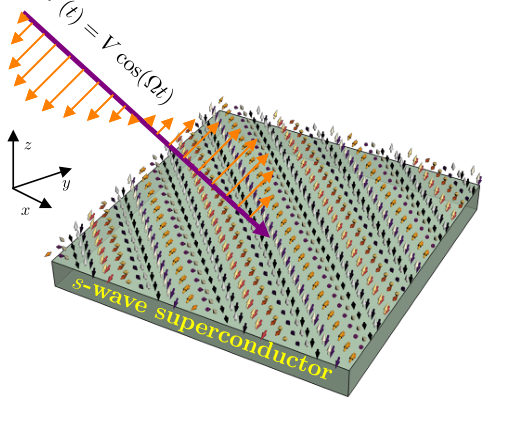
<figcaption class="paper-figure-caption"><b>Fig 1.</b> FIG. 1. Schematic representation of a 2D non-collinear spin texture decorated on a square lattice and deposited on the surface of a common s-wave SC. A time-periodic harmonic drive is applied to the onsite chemical potential to realize 0- and anomalous π-FMFEMs.</figcaption>
</figure>
<figure class="paper-figure-card">
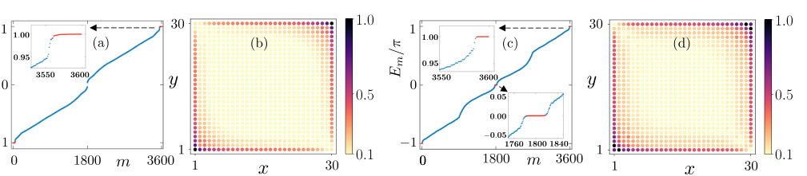
<figcaption class="paper-figure-caption"><b>Fig 2.</b> FIG. 2. In panels (a) and (c), we depict the quasi-energy spectra as a function of the state index m for the driven system, choosing the driving frequency Ω= 5∆0 and Ω= 10∆0 respectively. The red color dots indicate 0- and π-FMFEMs. In panel (b), we illustrate the LDOS distribution of π-FMFEMs (corresponding to the panel (a)) localized at the edges of the 2D domain. Similarly, in panel (d) we illustrate the LDOS spectra corresponding to the 0-FMFEMs in panel (c). The other model parameters are chosen as ∆0 = t = 1, J = 2∆0, V = 5∆0, gx = gy = π/2.</figcaption>
</figure>
<figure class="paper-figure-card">
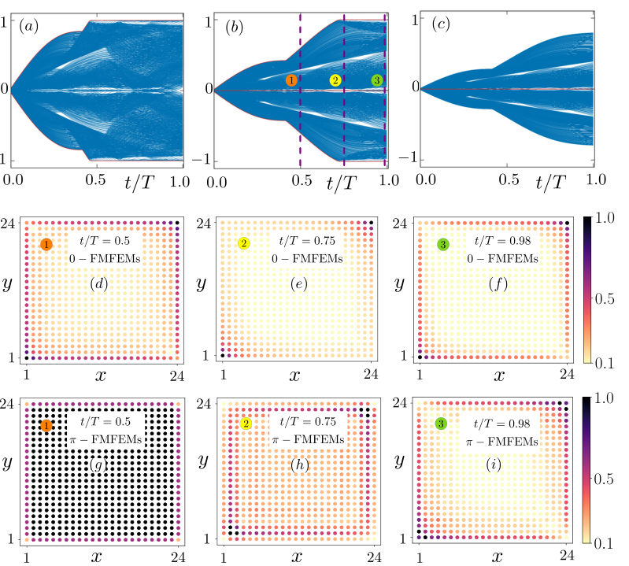
<figcaption class="paper-figure-caption"><b>Fig 3.</b> FIG. 3. In panels (a), (b), and (c), we demonstrate the time-dependent eigenvalue spectra E(t) of the time-evolution operator U(t, 0) as a function of time t over a full driving period choosing Ω= 5∆0, 10∆0, and 15∆0, respectively. Panels (d)–(f) show the evolution of the edge states corresponding to the 0-FMFEMs at intermediate frequency (Ω= 10∆0), considering time scales t = 0.5T, 0.75T, and 0.98T, respectively. The same is depicted for the π-FMFEMs in panels (g)–(i) considering the same time instants mentioned above. The other model parameters are chosen as ∆0 = t = 1, J = 2∆0, V = 5∆0, and gx = gy = π/2.</figcaption>
</figure>
<figure class="paper-figure-card">
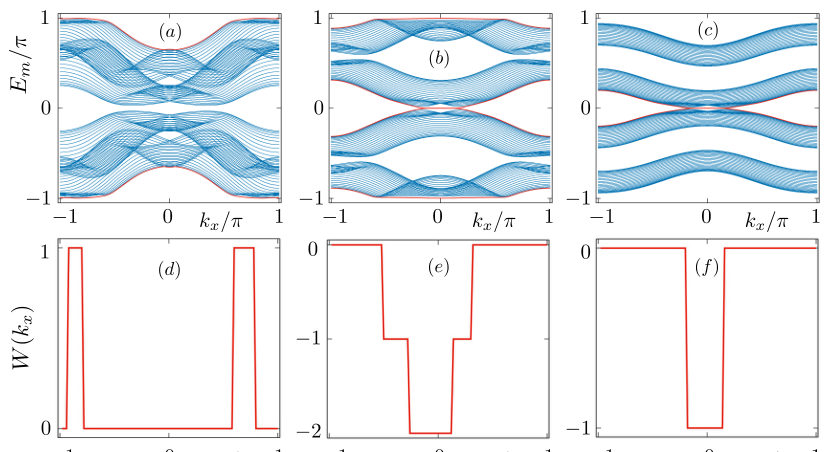
<figcaption class="paper-figure-caption"><b>Fig 4.</b> FIG. 4. Panels (a)-(c) correspond to the quasi-energy edge spectra shown as a function of momentum kx for three different values of the driving frequency, Ω= 5∆0, 10∆0, and 15∆0, respectively. On the other hand, panels (d)-(f) exhibit the corresponding winding number as a function of momentum kx for the same choice of respective driving frequencies. The other model parameters are chosen as follows: V = 5∆0, J = 2∆0, ∆0 = t = 1, and gx = gy = π/2.</figcaption>
</figure>
<figure class="paper-figure-card">
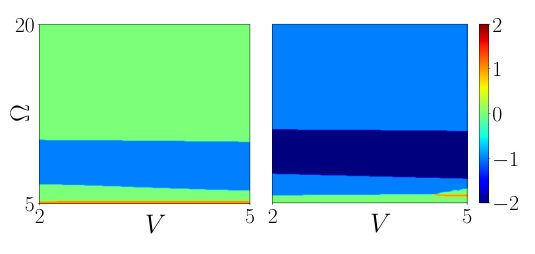
<figcaption class="paper-figure-caption"><b>Fig 5.</b> FIG. 5. Density plots of the winding number (evaluated at kx = 0) is displayed in the plane of driving amplitude (V ) and frequency (Ω). We present the phase diagram for two different values of the exchange coupling: J = 1.6∆0 (panel (a)) and J = 2∆0 (panel (b)), corresponding to the trivial and topological phases of the static system, respectively. The other model parameters are chosen as ∆0 = t = 1, V = 5∆0, and gx = gy = π/2.</figcaption>
</figure>
</div>

<p><strong>Summary.</strong> This theoretical work explores how periodically driving a magnet-superconductor junction can generate exotic topological superconducting phases characterized by anomalous Majorana flat edge modes. By analyzing the quasi-energy spectrum and winding number across varying driving frequencies, the authors map out a topological phase diagram. The findings demonstrate the tunability of these topological states using time-periodic driving, which has implications for superconducting quantum devices.</p>
<p><strong>Why it may be interesting.</strong> The use of Floquet engineering to induce and control topological superconductivity, particularly the emergence of anomalous $\pi$-modes, is highly relevant to open quantum systems and superconducting quantum circuits.</p>
<details>
<summary>Detailed structure</summary>
<p><strong>Main problem.</strong> The study investigates the generation and time evolution of anomalous Floquet Majorana flat edge modes (FMFEMs) in a 2D noncollinear magnet-superconductor heterostructure subjected to a harmonic drive.</p>
<p><strong>Main result.</strong> The system exhibits distinct topological phases dependent on the driving frequency, characterized by the emergence of $\pi$-FMFEMs at low frequencies and $0$-FMFEMs at high frequencies, confirmed by the winding number.</p>
<p><strong>Method.</strong> The research employs a real-space tight-binding model analyzed using Floquet theory, supplemented by Brillouin-Wigner and Floquet perturbation theory for analytical insight.</p>
<p><strong>Model / system.</strong> The physical system is a 2D Shiba lattice (magnet-superconductor heterostructure) described by a Bogoliubov-de-Gennes Hamiltonian, which is periodically driven by a time-dependent chemical potential.</p>
<p><strong>Key observables.</strong> Quasi-energy spectrum, Local Density of States (LDOS), and the topological winding number.</p>
<p><strong>Important parameters / regimes.</strong> Driving frequency ($\Omega$), driving amplitude ($V$), and the superconducting gap ($\Delta_0$). Key regimes include low, intermediate, and high frequencies.</p>
<p><strong>Assumptions / limitations.</strong> The analysis relies on the validity of the Floquet formalism, noting that perturbative methods (BW/FPT) fail to capture $\pi$-FMFEMs in the low-frequency regime.</p>
<p><strong>Figures summary.</strong> Figures illustrate the edge spectra (quasi-energy vs. momentum) for different driving frequencies, and show the winding number as a function of momentum to confirm topological invariants.</p>
<p><strong>Paper structure.</strong> The paper progresses from defining the physical model and Hamiltonian to calculating the quasi-energy spectrum across different driving regimes, followed by topological characterization using the winding number and comparison with perturbative expansions.</p>
</details>
<details>
<summary>Abstract</summary>
<p>We theoretically investigate the realization of gapless Floquet topological superconducting phases in a two-dimensional magnet-superconductor heterostructure (2D Shiba lattice) in the presence of a harmonic drive implemented in the chemical potential. Employing a real-space tight-binding model, we obtain both the regular $0$- and anomalous $π$-Floquet Majorana flat edge modes (FMFEMs) in the quasi-energy spectrum. We also study the real-time evolution of the FMFEMs and analyze their local density of states in the presence of such a periodic drive. The topological characterization is performed using the winding number, exploiting the chiral symmetry of the equivalent bulk effective momentum-space Hamiltonian. This is also supported by the corresponding edge state spectra. Furthermore, we employ the Brillouin-Wigner (BW) and Floquet perturbation theory (FPT) to gain analytical insight into the problem. We compare our exact (numerical), BW, and FPT results in terms of the quasi-energy spectra obtained across different frequency regimes. We find good agreement between the exact numerical, BW, and FPT results in the higher-frequency and high-amplitude domain, particularly close to the $0$-quasi-energy modes.</p>
</details>
<p><sub><a href="#top">↑ back to top</a></sub></p>

<p><a id="paper-2606.02694"></a></p>
<h3 id="dynamical-josephson-effect-between-a-singlet-and-a-triplet-superconductor"><a href="http://arxiv.org/abs/2606.02694v1">Dynamical Josephson Effect Between a Singlet and a Triplet Superconductor</a></h3>
<p><strong>Authors:</strong> Morten Amundsen, Niladri Banerjee, Igor Žutić<br>
<strong>Type:</strong> theory · <strong>Category:</strong> other · <strong>PDF:</strong> <a href="https://arxiv.org/pdf/2606.02694v1">https://arxiv.org/pdf/2606.02694v1</a><br>
<strong>Analysis basis:</strong> full PDF text, analyzed in chunks
<strong>Topic relevance:</strong> 🔥 <code>Keldysh / 2PI / non-Gaussian methods</code> <strong>4/5</strong> · <code>methods for driven-dissipative</code> <strong>2/5</strong> · <code>non-equilibrium dynamics</code> <strong>2/5</strong> · <code>correlated / nonlocal dissipation</code> <strong>1/5</strong> · <code>driven-dissipative phase transition</code> <strong>1/5</strong> · <code>exotic spin models in light-matter</code> <strong>1/5</strong> · <code>non-equilibrium universality</code> <strong>1/5</strong> · <code>spintronics-quantum-optics interface</code> <strong>1/5</strong></p>
<div class="figure-strip-hint">↔ Scroll figures horizontally</div>
<div class="paper-figures-scroll">
<figure class="paper-figure-card">
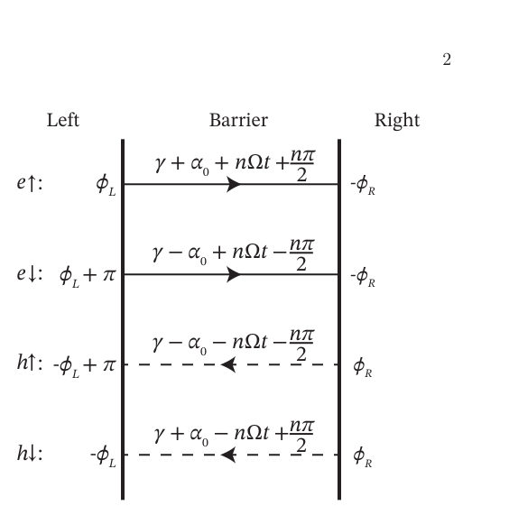
<figcaption class="paper-figure-caption"><b>Fig 1.</b> FIG. 2. Schematic of the phase accumulated by electrons ↑, ↓ tunneling from the singlet to the triplet superconductor, and holes ↑, ↓tunneling in the opposite direction.</figcaption>
</figure>
<figure class="paper-figure-card">
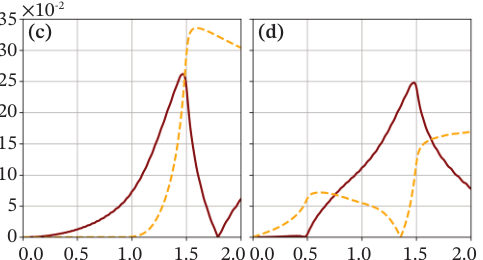
<figcaption class="paper-figure-caption"><b>Fig 2.</b> FIG. 3. The dissipationless (dissipative) IS (IA) current am- plitude as a function of the driving frequency Ω, normalized to I0 = π|∆0,R|/2eRN. (a), (b) for singlet-singlet and (c), (d) singlet-triplet JJs.</figcaption>
</figure>
</div>

<p><strong>Summary.</strong> This theoretical work analyzes the Josephson effect in a junction between singlet and triplet superconductors under a time-varying gate voltage. It demonstrates that the dynamic modulation induces a novel cos(phi) current component, which is a direct consequence of the spin symmetry mismatch. This effect suggests new ways to use such junctions for spin-triplet current sources in quantum devices.</p>
<p><strong>Why it may be interesting.</strong> The study of dynamical Josephson effects in unconventional superconductors provides a platform to probe spin-momentum locking and parity selection rules, which are crucial concepts in superconducting spintronics and topological superconductivity.</p>
<details>
<summary>Detailed structure</summary>
<p><strong>Main problem.</strong> The paper investigates how the selection rules governing the Josephson effect are modified when the junction is driven dynamically, particularly when coupling a spin-singlet and a spin-triplet superconductor.</p>
<p><strong>Main result.</strong> A time-dependent gate voltage induces a novel Josephson current component proportional to cos(phi), which is absent in the static limit and arises due to the spin symmetry mismatch between the superconductors.</p>
<p><strong>Method.</strong> The analysis employs the Keldysh Green function formalism to calculate the time-dependent current, decomposing it into symmetric (dissipationless) and antisymmetric (dissipative) components.</p>
<p><strong>Model / system.</strong> The system is a Josephson junction (JJ) connecting a spin-singlet (SL) and a spin-triplet (SR) superconductor, separated by a 2DEG whose coupling is modulated by a time-dependent gate voltage inducing SOC.</p>
<p><strong>Key observables.</strong> The current-phase relation (CPR), the total time-dependent current I(t), and the relative strengths of the dissipationless and dissipative current components.</p>
<p><strong>Important parameters / regimes.</strong> The driving frequency ($\Omega$), the SOC strength ($\alpha_1$), and the superconducting gap sizes ($\Delta_L, \Delta_R$).</p>
<p><strong>Assumptions / limitations.</strong> The analysis assumes a simple SOC model ($\propto \sigma_z k_y$) and uses approximations in the Keldysh formalism, neglecting higher-order frequency mode contributions.</p>
<p><strong>Figures summary.</strong> Figures schematically illustrate the JJ setup with time-dependent SOC and show the phase accumulation of tunneling particles, while Figure 3 compares the normalized amplitudes of the AC and dissipative currents for singlet-singlet vs. singlet-triplet junctions.</p>
<p><strong>Paper structure.</strong> The paper progresses from establishing the physical model (SL/SR JJ with time-dependent SOC) to deriving the current-phase relation using phase accumulation arguments, culminating in the full calculation via the Keldysh formalism to extract the time-dependent current components.</p>
</details>
<details>
<summary>Abstract</summary>
<p>Phase-sensitive Josephson effect has long been central to identifying unconventional pairing symmetries in superconductors. Although the selection rules governing Josephson junctions (JJs) are generally determined by the symmetries of the constituent superconductors, we demonstrate that this paradigm is modified in the dynamic regime. By modeling a JJ where spin-singlet and spin-triplet superconductors are separated by a two-dimensional electron gas, we show that a time-dependent gate voltage qualitatively changes the underlying selection rules. This modification arises as a consequence of the gate-controlled spin-orbit coupling. A harmonic modulation of the gate voltage generates an oscillatory $\cos φ$ Josephson component which vanishes in the static limit. The resulting charge current contains both dissipationless and dissipative components, with the latter strongly suppressed at low temperatures. This dynamical Josephson effect could transform the use of JJs in qubits, as sources of spin-triplet currents, and as platforms for proximity effects.</p>
</details>
<p><sub><a href="#top">↑ back to top</a></sub></p>

<p><a id="paper-2606.03563"></a></p>
<h3 id="reversible-superdense-ordering-of-tetragonal-lithium-in-a-layered-material"><a href="http://arxiv.org/abs/2606.03563v1">Reversible Superdense Ordering of Tetragonal Lithium in a Layered Material</a></h3>
<p><strong>Authors:</strong> Natalie L. Williams, Stephen D. Funni, Sihun Lee, Drake Niedzielski, Mingjia Fang, Josh Leeman, Ratnadwip Singha, Saif Siddique, Tyler Hendee, Shiyu Xu, Jeffrey Kaaret, Giovanni Sartorello, Nicole A. Benedek, Leslie M. Schoop, Lynden A. Archer, Tomás A. Arias, Judy J. Cha<br>
<strong>Type:</strong> experiment · <strong>Category:</strong> other · <strong>PDF:</strong> <a href="https://arxiv.org/pdf/2606.03563v1">https://arxiv.org/pdf/2606.03563v1</a><br>
<strong>Analysis basis:</strong> full PDF text, analyzed in chunks
<strong>Topic relevance:</strong> <code>driven-dissipative phase transition</code> <strong>3/5</strong> · <code>non-equilibrium dynamics</code> <strong>3/5</strong> · <code>non-equilibrium universality</code> <strong>3/5</strong> · <code>analog quantum simulation</code> <strong>2/5</strong> · <code>methods for driven-dissipative</code> <strong>2/5</strong> · <code>Keldysh / 2PI / non-Gaussian methods</code> <strong>1/5</strong> · <code>entanglement &amp; information structure</code> <strong>1/5</strong></p>
<div class="figure-strip-hint">↔ Scroll figures horizontally</div>
<div class="paper-figures-scroll">
<figure class="paper-figure-card">
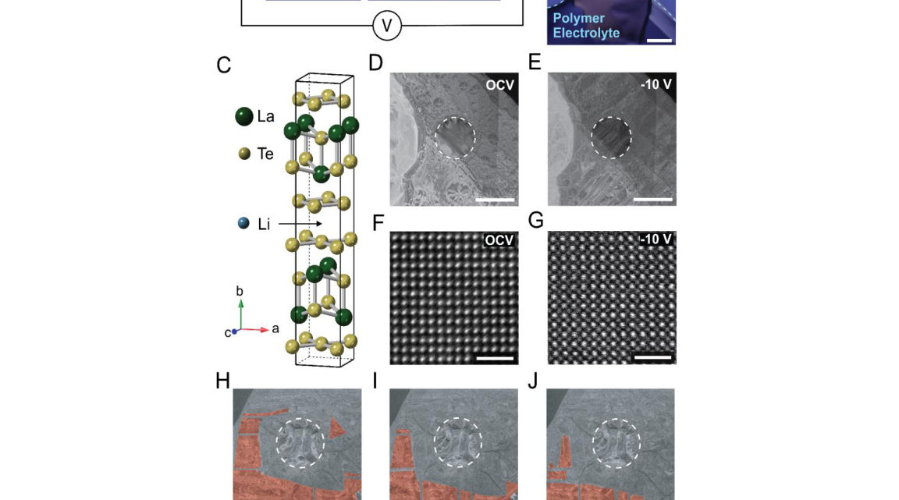
<figcaption class="paper-figure-caption"><b>Fig 1.</b> Fig. 1. Lithium intercalation of LaTe3. (A) Cross-section schematic of a lithium-ion electrochemical cell (drawn not to scale). (B) Optical image of a LaTe3 flake in an electrochemical cell partially covered by polymer electrolyte. Scale bar: 10 µm. White dashed square indicates the region of the flake shown in (D) and (E). (C) Structure of LaTe3. Arrow denotes Li intercalation site. Low-magnification HAADF-STEM images of LaTe3 at (D) OCV at 1.2 V and (E) −10 V. Scale bar: 5 µm. White dashed circle in (D) and (E) indicates the membrane hole. Atomic-resolution HAADF-STEM images at (F) OCV and (G) −10 V. Scale bar: 1 nm. (H–J) False-colored HAADF-STEM images taken 40 seconds apart of a...</figcaption>
</figure>
<figure class="paper-figure-card">
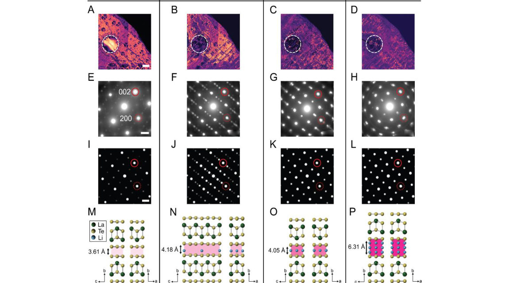
<figcaption class="paper-figure-caption"><b>Fig 2.</b> Fig. 2. Lithiated phases of LaTe3. Virtual dark field images of the flake from the 4D-STEM datasets corresponding to the pristine (A) and Li-intercalated phases (B–D). Scale bar: 2 µm.</figcaption>
</figure>
<figure class="paper-figure-card">
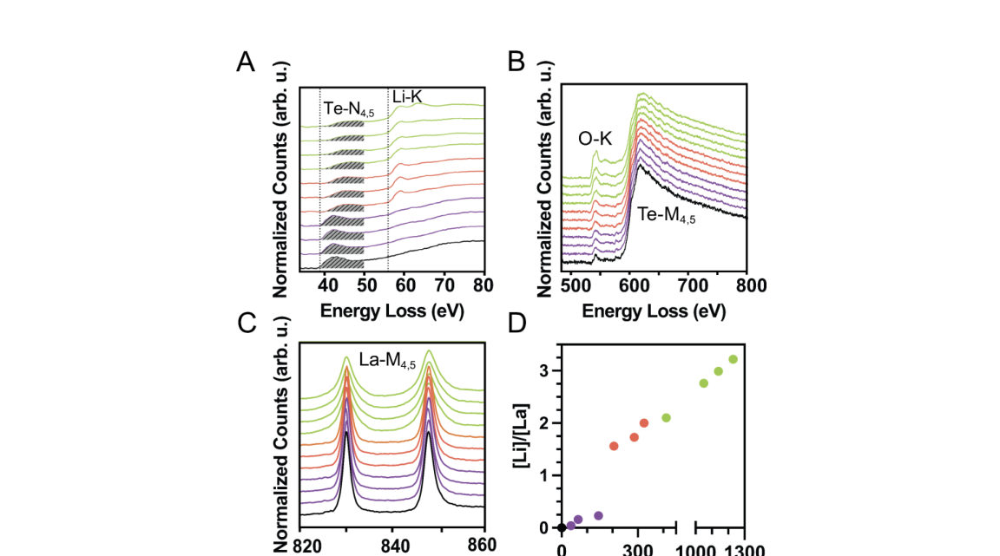
<figcaption class="paper-figure-caption"><b>Fig 3.</b> Fig. 3. In-situ STEM-EELS measurements throughout lithiation. (A) Low-energy core loss range containing the Te-N4,5 and Li-K edges. (B) O-K and Te-M4,5 edges. Note the decrease in intensity of the Te-N4,5 edge onset (40 eV) with increasing Li concentration (A) despite no loss of Te as indicated in (B). (C) La-M4,5 edge shows no chemical shifts or branching ratio changes indicating the La bonding environment is unchanged even at high lithium content. (D) Li concentrations relative to La as quantified from the spectra in (A) and (C). Data are color-coded to indicate different lithiated phases. Transition to Phase 3 occurs at x ≈ 2 (green spectra). It is characterized by a less prominent Li-K...</figcaption>
</figure>
<figure class="paper-figure-card">
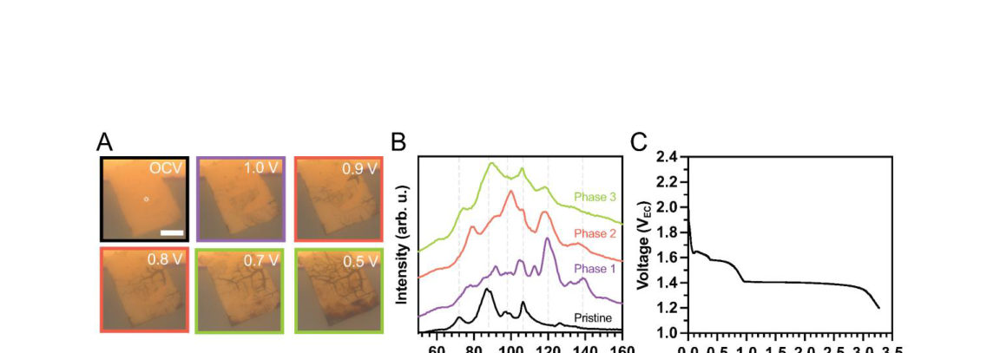
<figcaption class="paper-figure-caption"><b>Fig 4.</b> Fig. 4. In-situ Raman characterization and galvanostatic discharge of LaTe3 during lithiation. (A) Optical images of a LaTe3 flake under polymer electrolyte. The white circle marks the Raman collection spot for all spectra. Colored borders correspond to select spectra in (B). Scale bar: 10 µm. (B) In-situ Raman spectra of LaTe3 with distinct lithiated phases shown in purple, red, and green. (C) Galvanostatic discharging of a LaTe3 powder coin cell at a current of 0.071 mA and a current density of 0.1 mA/cm2 in the voltage window 2.2 to 1.2 V vs. Li+/Li. In Phase 2 at VEC = 0.9 V, the two Raman modes at 120 and 142 cm−1 red-shift and phonon modes between ~85 and 110 cm−1 coalesce into a...</figcaption>
</figure>
<figure class="paper-figure-card">
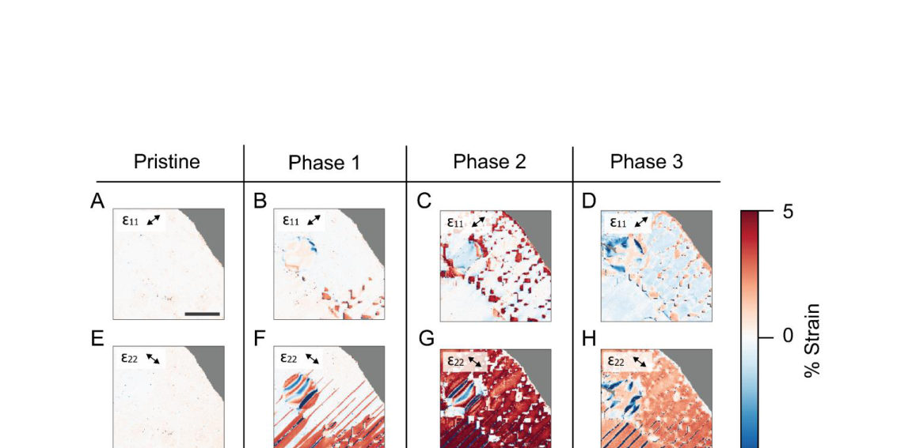
<figcaption class="paper-figure-caption"><b>Fig 5.</b> Fig. 5. Strain in pristine and intercalated LaTe3. Representative strain maps along the c- direction (A–D) and a-direction (E–H). The average lattice from the membrane hole region of the pristine flake is used as the zero-strain reference for all maps. Note that: in (B, F) the lower portion of the flake and membrane hole areas have transitioned to Phase 1 while the remainder of the flake is in the pristine state; in (C, G) the entire flake has been lithiated with the lower portion in Phase 2 and the upper portion in Phase 1. Areas with large compressive strain values (dark blue) are attributable to the flake being locally off zone axis due to buckling folds induced from intercalation...</figcaption>
</figure>
</div>

<p><strong>Summary.</strong> This paper reports on the in-situ characterization of lithium intercalation in the layered material LaTe_3 using advanced multimodal STEM. The authors successfully mapped three distinct, reversible ordered phases, most notably discovering a novel, superdense three-layer lithium phase. This work demonstrates the power of combining multiple electron microscopy techniques to track complex solid-state electrochemical processes crucial for battery development.</p>
<p><strong>Why it may be interesting.</strong> While focused on materials science, the study involves tracking complex, reversible phase transitions and structural ordering under non-equilibrium electrochemical conditions, which touches upon concepts relevant to non-equilibrium statistical mechanics and open quantum systems.</p>
<details>
<summary>Detailed structure</summary>
<p><strong>Main problem.</strong> The study aims to understand the lithium (Li) ordering and dynamics during intercalation in layered materials for use in next-generation energy storage.</p>
<p><strong>Main result.</strong> The researchers identified three distinct, reversible ordered phases of Li_xLaTe_3, notably discovering a new, superdense three-layer lithium phase within the van der Waals gap at high Li concentrations.</p>
<p><strong>Method.</strong> The work employs a multimodal approach combining in-situ Scanning Transmission Electron Microscopy (STEM) with spectroscopy (EELS) and diffraction, complemented by DFT calculations.</p>
<p><strong>Model / system.</strong> The physical system is the layered material LaTe_3 undergoing electrochemical lithiation, forming Li_xLaTe_3. The study tracks structural and chemical changes across varying lithium concentrations (x=1/3 to 3).</p>
<p><strong>Key observables.</strong> HAADF-STEM images, EELS spectra (tracking Li/Te bonding), 4D-STEM diffraction patterns (revealing superlattice spots), and Raman phonon modes.</p>
<p><strong>Important parameters / regimes.</strong> Lithium concentration (x), applied electrochemical potential (V), and in-plane strain (up to 5%).</p>
<p><strong>Assumptions / limitations.</strong> The multimodal STEM approach is necessary to overcome the limitations of single-technique X-ray methods for observing Li ordering.</p>
<p><strong>Figures summary.</strong> Figures illustrate the in-situ setup, structural changes via STEM/diffraction patterns across different phases, and the evolution of electronic states via EELS.</p>
<p><strong>Paper structure.</strong> The paper follows a progression from establishing the need for advanced characterization to presenting evidence for three distinct phases, culminating in the characterization of the novel, superdense Li phase.</p>
</details>
<details>
<summary>Abstract</summary>
<p>Understanding lithium (Li) ordering and dynamics is foundational in energy storage. X-ray based experimental methods do not simultaneously provide atomic structure information together with chemical composition and local bonding information for lithium in solids. Here we employ scanning transmission electron microscopy (STEM) and combine imaging, spectroscopy, and diffraction within a single experiment, to observe, in situ, an all-solid-state electrochemical cell. By integrating multimodal STEM with other complementary techniques, we report a complete mapping of lithium intercalation in a layered system, LaTe3. We identify three ordered phases of LixLaTe3 with x ranging from 1/3 to 3 with in-plane strain of up to 5%. At a very high lithium concentration of Li3LaTe3, we discover an unexpected three-layer, superdense lithium phase with tetragonal symmetry occupying the van der Waals gap. This represents a new Li phase that is reversible. Our multimodal approach thus enables complete tracking of lithium ordering and dynamics, important for next-generation energy storage applications.</p>
</details>
<p><sub><a href="#top">↑ back to top</a></sub></p>

<p><a id="paper-2606.03016"></a></p>
<h3 id="attractive-hopfions-and-bimerons-in-thin-films-of-chiral-magnets-cluster-formation-and-lattice-instability-in-the-conical-phase"><a href="http://arxiv.org/abs/2606.03016v1">Attractive Hopfions and Bimerons in Thin Films of Chiral Magnets: Cluster Formation and Lattice Instability in the Conical Phase</a></h3>
<p><strong>Authors:</strong> Andrey O. Leonov, Takayuki Shigenaga<br>
<strong>Type:</strong> theory · <strong>Category:</strong> other · <strong>PDF:</strong> <a href="https://arxiv.org/pdf/2606.03016v1">https://arxiv.org/pdf/2606.03016v1</a><br>
<strong>Analysis basis:</strong> full PDF text, analyzed in chunks
<strong>Topic relevance:</strong> <code>analog quantum simulation</code> <strong>3/5</strong> · <code>exotic spin models in light-matter</code> <strong>3/5</strong> · <code>spintronics-quantum-optics interface</code> <strong>3/5</strong> · <code>Frenkel-Kontorova</code> <strong>2/5</strong> · <code>driven-dissipative phase transition</code> <strong>1/5</strong> · <code>non-equilibrium dynamics</code> <strong>1/5</strong> · <code>non-equilibrium universality</code> <strong>1/5</strong></p>
<div class="figure-strip-hint">↔ Scroll figures horizontally</div>
<div class="paper-figures-scroll">
<figure class="paper-figure-card">
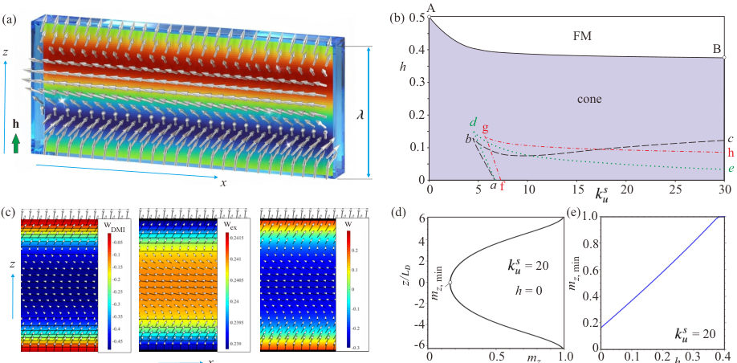
<figcaption class="paper-figure-caption"><b>Fig 1.</b> FIG. 1. (Color online) Confined conical state in a thin film of thickness equal to one spiral pitch, λ = 4π. (a) Schematic illustration of the magnetization distribution within the conical spiral shown by gray arrows, together with a color map of the my component using the standard color scale from −1 (blue) to +1 (red). (b) Phase diagram in the (h, ks u) plane. The line A–B denotes the second-order transition from the conical to the homogeneous state; point A corresponds to θ0 = 0 and the critical field h = 1/2, in agreement with the analytical solution (6). The curvilinear boundary a–b–c (black dashed line) separates the parameter region where the CF–1 phase becomes energetically...</figcaption>
</figure>
<figure class="paper-figure-card">
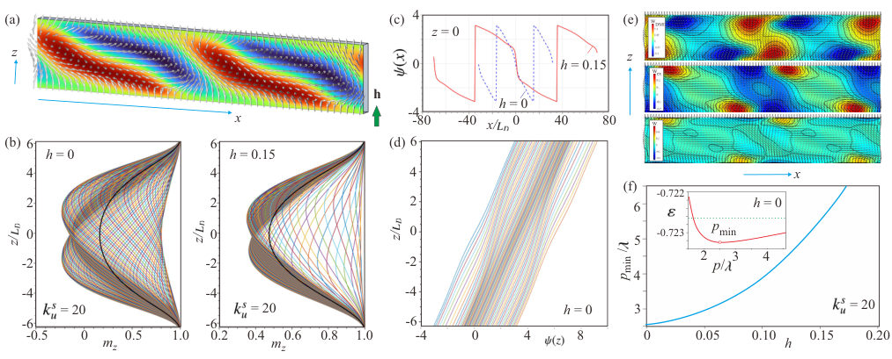
<figcaption class="paper-figure-caption"><b>Fig 2.</b> FIG. 2. (Color online) Internal structure and energetic properties of the CF–1 phase. (a) Representative magnetization configuration of a cholesteric finger of the first type. (b) Angular profiles θ(z) taken at different lateral positions x across one period of the CF–1 structure. The black solid line shows the profile for the conical phase for comparison. Most CF–1 profiles exhibit stronger rotation, with some reaching negative values of mz, while profiles with reduced rotation compensate this excess. With increasing magnetic field (h = 0.15, ks u = 20, second panel), the profiles progressively converge toward the conical solution. (c) Lateral dependence ψ(x) at the mid-plane z = λ/2,...</figcaption>
</figure>
<figure class="paper-figure-card">
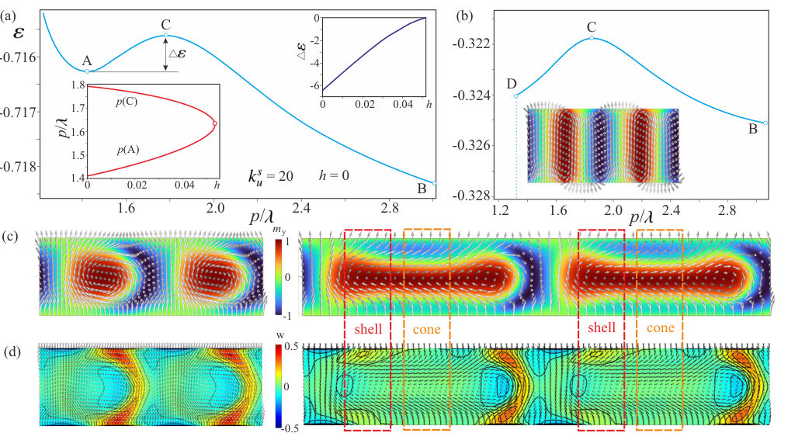
<figcaption class="paper-figure-caption"><b>Fig 3.</b> FIG. 3. (a) Energy density of the bimeron lattice as a function of the lattice period p at fixed control parameters ks u = 20 and h = 0, showing a local minimum (A) separated by a potential barrier (maximum at C) from the lower-energy state with isolated bimerons embedded in the conical phase (B). Left inset: magnetic-field dependence of the lattice periods corresponding to points A and C up to the critical field where the minimum and maximum merge. Right inset: field dependence of the potential barrier height ∆ε, which vanishes at the critical field. (b) Energy-density curve in the regime where the minimum disappears from the left side, leading to a discontinuous transition of the bimeron...</figcaption>
</figure>
<figure class="paper-figure-card">
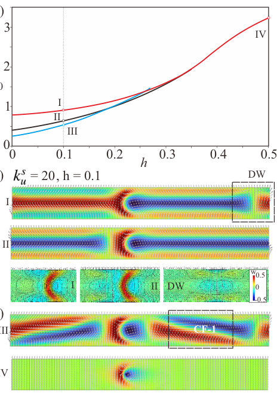
<figcaption class="paper-figure-caption"><b>Fig 4.</b> FIG. 4. (a) Eigen-energies of isolated bimerons embedded in the conical phase, calculated relative to the energy of the conical state and plotted as a function of magnetic field. The red and black curves correspond to configurations I and II, respectively. (b) Spin con- figurations and corresponding energy-density distributions. Upper row: configuration I, in which the bimeron induces a phase shift of the conical state and generates a domain wall between conical do- mains of opposite phase (highlighted by the dashed black rectangle). Second row: configuration II, where the conical phase has identical phase on both sides of the bimeron and no DW is formed. Third row: spatial distributions of...</figcaption>
</figure>
<figure class="paper-figure-card">
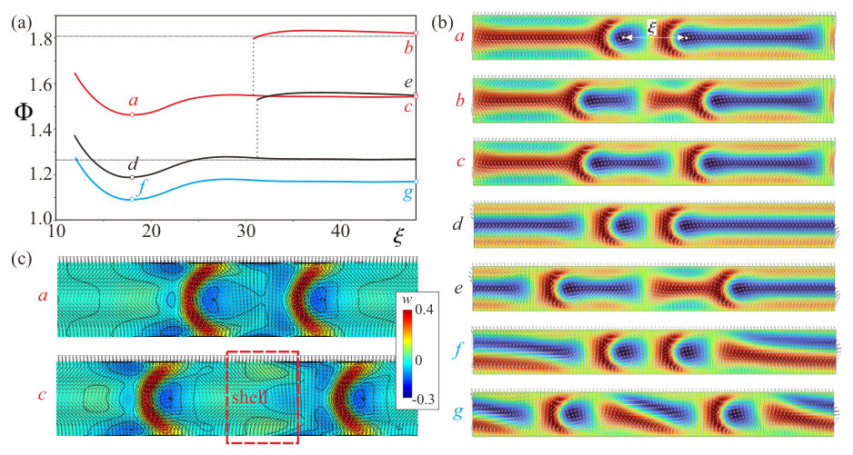
<figcaption class="paper-figure-caption"><b>Fig 5.</b> FIG. 5. (a) Interaction potentials Φ(ξ) for pairs of CF–2 (bimerons) embedded in the conical phase at ks u = 20 and h = 0.1. The total energy relative to the conical state is plotted as a function of the inter-bimeron separation ξ for different realizations distinguished by the number and arrangement of domain walls. Branching of the curves reflects the formation or annihilation of DWs upon varying ξ. (b) Representative spin configurations corresponding to the labeled states (a–e). Configuration b contains two DWs and exhibits the highest pair energy at large separations, while configurations c and e contain a single DW located either in the interior or exterior region. Configurations a, d,...</figcaption>
</figure>
</div>

<p><strong>Summary.</strong> This work theoretically examines how topological solitons (bimerons and hopfions) interact within chiral magnetic thin films hosting a conical background. Although the interactions are attractive, leading to stable clusters, the system fundamentally resists forming a true, stable periodic lattice. This highlights a crucial distinction between local attraction and global thermodynamic stability in complex magnetic materials.</p>
<p><strong>Why it may be interesting.</strong> The concept of topological defects interacting in a frustrated background, leading to clustering without true long-range order, mirrors complex phase behavior seen in frustrated quantum magnets or defect arrays in quantum materials.</p>
<details>
<summary>Detailed structure</summary>
<p><strong>Main problem.</strong> The study investigates the energetics, interactions, and ordering tendencies of topological textures like bimerons and hopfions in thin films of chiral magnets under a conical background state.</p>
<p><strong>Main result.</strong> While attractive interactions promote the formation of bound clusters, the system resists forming a thermodynamically stable, long-range periodic lattice, instead favoring invasion by the conical spiral or CF-1 phase.</p>
<p><strong>Method.</strong> The research uses theoretical energy minimization techniques applied to a phenomenological energy functional governing the magnetization profile in the thin film geometry.</p>
<p><strong>Model / system.</strong> The system models thin films of chiral magnets or chiral liquid crystals, analyzed using an energy functional incorporating exchange, Dzyaloshinskii-Moriya interaction (DMI), and surface anchoring terms. The background state is characterized as a conical phase.</p>
<p><strong>Key observables.</strong> Eigen-energy of isolated solitons, inter-soliton interaction potential, and the energy density dependence on the lattice period.</p>
<p><strong>Important parameters / regimes.</strong> Applied magnetic field strength (h), surface anchoring strength (Ks), and the geometry of the conical background.</p>
<p><strong>Assumptions / limitations.</strong> The analysis operates in a thin-film geometry and treats the system using a phenomenological energy functional, neglecting certain nonlocal electrostatic effects.</p>
<p><strong>Figures summary.</strong> Figures illustrate energy density maps, the dependence of soliton energy on radius (W(R)), and crucially, the lack of a minimum energy density as a function of the lattice period for hexagonal arrangements.</p>
<p><strong>Paper structure.</strong> The paper progresses by first establishing the background conical state, then analyzing the energetics of isolated bimerons and hopfions, demonstrating their attraction, and finally proving that this attraction does not lead to stable long-range crystalline order due to phase competition.</p>
</details>
<details>
<summary>Abstract</summary>
<p>We investigate the energetics, interactions, and ordering tendencies of bimerons (cholesteric fingers of the second type, CF--2) and hopfions in thin films of chiral magnets and chiral liquid crystals hosting a conical background state. Although isolated bimerons possess positive eigen-energy with respect to the conical phase, they develop an attractive interaction mediated by the restructuring and partial overlap of their positive-energy shells, i.e., intermediate regions formed relative to the conical state. This attraction promotes the formation of bound pairs and extended bimeron chains, even in parameter regimes where a periodic bimeron lattice is no longer thermodynamically stable.   Extending the analysis to three dimensions, we show that circularization of bimerons into hopfions renders their energy finite and gives rise to a well-defined metastability window closely linked to the stability range of cholesteric fingers. Isolated hopfions likewise exhibit an attractive interaction within the conical phase, leading to the formation of hexagonally ordered clusters. The attraction originates from the competition between favorable and unfavorable twist regions and from the energetic cost of the shell structures imposed by the conical background.   Despite the presence of attractive pair potentials and cluster formation, we demonstrate that hexagonal hopfion lattices do not exhibit an equilibrium lattice period. Instead, the system evolves toward states in which the conical spiral or the CF--1 phase (cholesteric fingers of the first type) progressively invade the inter-soliton regions, thereby preventing crystallization. Our results reveal a regime of attraction without stable long-range order and clarify the interplay between topology, confinement, and conical-phase frustration in chiral magnet and liquid-crystal thin films.</p>
</details>
<p><sub><a href="#top">↑ back to top</a></sub></p>

<p><a id="paper-2606.03431"></a></p>
<h3 id="epitaxial-math901math-with-intrinsic-magnetocrystalline-anisotropy-as-a-route-to-bias-field-free-nonlinear-half-metal-magnonics-at-the-nanoscale"><a href="http://arxiv.org/abs/2606.03431v1">Epitaxial $\mathrm{Co_2MnSi}$ with intrinsic magnetocrystalline anisotropy as a route to bias-field-free nonlinear half-metal magnonics at the nanoscale</a></h3>
<p><strong>Authors:</strong> Anna Maria Friedel, Jaafar Ghanbaja, Björn Heinz, Moritz Bechberger, Sylvie Migot, Sébastien Petit-Watelot, Stéphane Andrieu, Philipp Pirro<br>
<strong>Type:</strong> both · <strong>Category:</strong> other · <strong>PDF:</strong> <a href="https://arxiv.org/pdf/2606.03431v1">https://arxiv.org/pdf/2606.03431v1</a><br>
<strong>Analysis basis:</strong> full PDF text, analyzed in chunks
<strong>Topic relevance:</strong> <code>spintronics-quantum-optics interface</code> <strong>3/5</strong> · <code>driven-dissipative phase transition</code> <strong>2/5</strong> · <code>non-equilibrium dynamics</code> <strong>2/5</strong> · <code>analog quantum simulation</code> <strong>1/5</strong> · <code>exotic spin models in light-matter</code> <strong>1/5</strong> · <code>methods for driven-dissipative</code> <strong>1/5</strong> · <code>non-equilibrium universality</code> <strong>1/5</strong></p>
<div class="figure-strip-hint">↔ Scroll figures horizontally</div>
<div class="paper-figures-scroll">
<figure class="paper-figure-card">
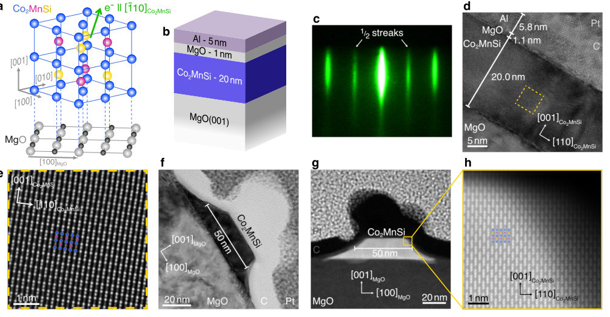
<figcaption class="paper-figure-caption"><b>Fig 1.</b> Figure 1: Nanoscale integrity of the L21-ordered Heusler crystal structure upon nanofabrication. (a) Illustration of the Heusler lattice in the L21 order on an MgO(001) substrate44, with an indication of the electron beam probing direction. (b) Deposited thin film stack with nominal thicknesses grown by MBE. (c) in situ RHEED for e−∥[110]Co2MnSi, where the appearance of 1/2-streaks indicates a high chemical ordering degree. (d) HRTEM micrograph along the ¯110  zone axis of Co2MnSi showing the epitaxial Co2MnSi/MgO/Al thin film stack prior to nanofabrication. The dashed yellow square indicates the size of the region imaged in e. (e) Filtered HAADF-STEM micrograph revealing the...</figcaption>
</figure>
<figure class="paper-figure-card">
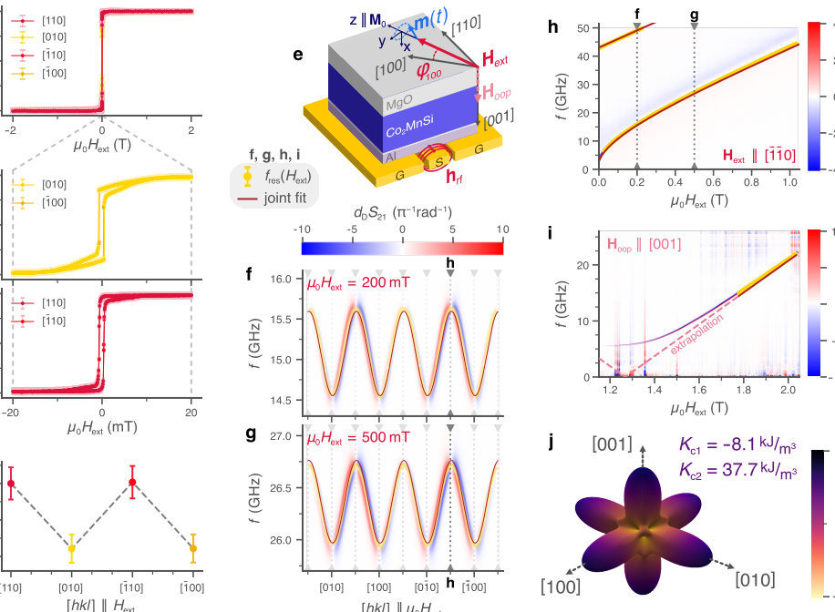
<figcaption class="paper-figure-caption"><b>Fig 2.</b> Figure 2: Cubic magnetocrystalline anisotropy in Co2MnSi. Note: All lattice directions [ℎ𝑘𝑙] in this figure are given in the Co2MnSi crystal coordinates defined in Figure 1a. (a) Hysteresis of 𝑀(𝐻ext) from VSM with |𝜇0𝐻ext| ≤2 T applied in the film plane along the indicated lattice direction. (b, c) Small-field hysteresis 𝑀(𝐻ext) from VSM with |𝜇0𝐻ext| ≤20 mT applied in the film plane along the indicated lattice direction. (d) Relative remanence magnetization 𝑀r / 𝑀sat, with 𝑀r extracted from b, c and 𝑀sat from a. (e) Schematic illustration of the rotational BB-FMR geometry with the relevant crystal directions and the dynamic coordinates 𝑥, 𝑦, 𝑧. (f, g, h, i) Real part of the 𝑆21 signal...</figcaption>
</figure>
<figure class="paper-figure-card">
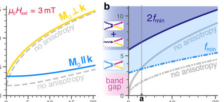
<figcaption class="paper-figure-caption"><b>Fig 3.</b> Figure 3: Anisotropy impact on the spin-wave dispersion. (a) Isotropic and anisotropic spin-wave dispersion58,59 for 𝜇0𝐻ext = 3 mT for the 20 nm Co2MnSi film magnetized along an easy axis ⟨110⟩Co2MnSi. (b) Corresponding spin-wave band bottom frequency 𝑓min (𝐻ext) and 2 𝑓min (𝐻ext) and resulting first-order and second-order nonlinear instability ranges.</figcaption>
</figure>
<figure class="paper-figure-card">

<figcaption class="paper-figure-caption"><b>Fig 4.</b> Figure 4: Anisotropy-induced instability suppression. (a) Schematic of the µBLS probing. (b) Spin-wave band bot- tom frequency 𝑓min (𝐻ext) and 2 𝑓min (𝐻ext) considering the ef- fective waveguide width 𝑤eff = 4.94 µm, and resulting first- order instability suppression range. (c) BLS intensity spectra 𝐼BLS ( 𝑓BLS) as a function of the applied excitation power. (d-h) Selected BLS spectra across the instability onset.</figcaption>
</figure>
<figure class="paper-figure-card">
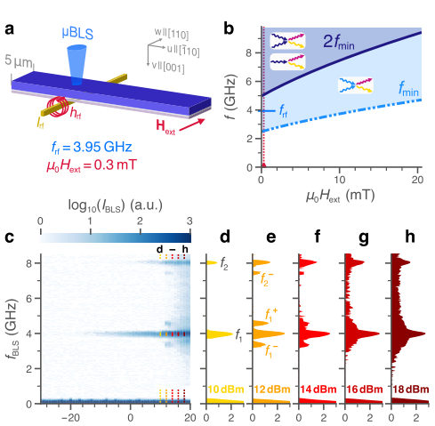
<figcaption class="paper-figure-caption"><b>Fig 5.</b> Figure 4c presents the BLS intensity spectra 𝐼BLS ( 𝑓BLS) as a function of the applied excitation power 𝑃rf for an excitation at 𝑓rf = 3.95 GHz in the near-zero bias field 𝜇0𝐻ext = 0.3 mT. As the excitation power is increased, the direct excitation 𝑓1 = 𝑓rf is increasingly populated, and additionally for 𝑃rf ≥0 dBm (1 mW) a population of the second harmonic 𝑓2 = 2 · 𝑓rf is observed linked to the elliptical precession at low fields65. The first and second harmonic are the only detected modes for 𝑃rf &lt; 12 dBm (16 mW) as marked in the spectrum in Figure 4d. At 𝑃rf = 12 dBm, the onset of the second-order instability is observed with a characteristic population of secondary modes 𝑓− 1 and 𝑓+ 1...</figcaption>
</figure>
</div>

<p><strong>Summary.</strong> This research demonstrates that epitaxial $\mathrm{Co_2MnSi}$ retains its critical structural order even after nanoscale patterning, which is crucial for its magnetic functionality. The intrinsic cubic magnetocrystalline anisotropy is shown to stabilize spin-wave dynamics, enabling nonlinear magnonic operation at near-zero bias fields. This establishes $\mathrm{Co_2MnSi}$ as a highly promising, scalable platform for next-generation spintronic devices.</p>
<p><strong>Why it may be interesting.</strong> While focused on condensed matter magnetism, the study of nonlinear wave dynamics and the use of advanced spectroscopic techniques ($\mu$BLS) to probe collective excitations in patterned systems has parallels with studying nonlinear wave propagation in quantum optical cavities or superconducting circuits.</p>
<details>
<summary>Detailed structure</summary>
<p><strong>Main problem.</strong> The central goal is to establish $\mathrm{Co_2MnSi}$ as a robust, scalable platform for bias-field-free nonlinear half-metal magnonics at the nanoscale.</p>
<p><strong>Main result.</strong> The intrinsic cubic magnetocrystalline anisotropy in epitaxial $\mathrm{Co_2MnSi}$ stabilizes spin-wave dynamics, suppressing first-order instabilities and enabling low-bias field operation in the favorable Damon-Eshbach geometry.</p>
<p><strong>Method.</strong> The study combines epitaxial growth (MBE), top-down nanofabrication (EBL/Ar+ etching), and advanced characterization techniques including $\mu$BLS, FMR, and TEM to probe structure and dynamics.</p>
<p><strong>Model / system.</strong> The physical system is epitaxial $\mathrm{L2_1}$-ordered $\mathrm{Co_2MnSi}$ Heusler thin films patterned into nanoscale waveguides. The analysis relies on spin-wave dispersion models incorporating magnetocrystalline anisotropy and dipolar effects.</p>
<p><strong>Key observables.</strong> Spin-wave dispersion, nonlinear instability onset (first and second order), spin-wave decay lengths ($\delta_{amp}$), and magnetization switching fields.</p>
<p><strong>Important parameters / regimes.</strong> Intrinsic cubic magnetocrystalline anisotropy, ultralow Gilbert damping ($\alpha \le 10^{-3}$), and operation at vanishing external bias fields.</p>
<p><strong>Assumptions / limitations.</strong> The primary assumption is that the desirable magnetic properties, particularly the crystal structure, are preserved during the challenging top-down nanoscale patterning process.</p>
<p><strong>Figures summary.</strong> Figures illustrate the nanoscale integrity of the L21-ordered structure after patterning, quantify the cubic magnetocrystalline anisotropy via FMR, and show $\mu$BLS spectra confirming nonlinear instabilities and stabilized spin-wave propagation.</p>
<p><strong>Paper structure.</strong> The paper systematically moves from confirming the structural integrity of the material after nanofabrication (TEM/STEM) to quantifying the intrinsic magnetic anisotropy (FMR/VSM), and finally demonstrating the functional consequences of this anisotropy on nonlinear spin-wave dynamics ($\mu$BLS/Kerr).</p>
</details>
<details>
<summary>Abstract</summary>
<p>Half-metallic Heusler compounds like $\mathrm{Co_2MnSi}$ allow to bridge magnonic and spintronic functionality for hybrid unconventional computing approaches with sought-after properties like 100% spin polarization and associated low Gilbert damping $α\leq 10^{-3}$. However, the desirable material parameters are inherently tied to the crystal lattice with a particularly critical dependence on structural order in $\mathrm{Co_2MnSi}$. To date, the successful fabrication of nanoscale devices with robust structural integrity remains yet a challenge, and consequently the impact of the material parameters on the resulting nonlinear spin-wave dynamics remains largely unexplored. Here, we report on a study of linear and nonlinear spin-wave dynamics in transversally magnetized $\mathrm{Co_2MnSi}$ waveguides with impeccable crystalline ordering. We show that epitaxial, $\mathrm{L2}_1$-ordered $\mathrm{Co_2MnSi}$ exhibits an intrinsic cubic anisotropy with first- and second-order contributions, stabilizing a magnetization alignment along the crystal $\langle110\rangle$ directions. We confirm the implication of an unaffected crystal structure resulting in preserved magnetic properties in the patterned structures. Herein, the persistent magnetocrystalline anisotropy reshapes the spin-wave dispersion which yields a first-order nonlinear instability suppression range extending over several GHz - even for vanishing bias fields. Moreover, the intrinsic magnetocrystalline anisotropy can be exploited to counteract shape demagnetization for a stabilized low bias field operation in the favourable Damon-Eshbach geometry with high group velocities and decay lengths. Together with the proven half-metallicity and ultralow Gilbert damping, this research establishes $\mathrm{Co_2MnSi}$ as a robust, scalable platform towards bias-field-free nonlinear half-metal magnonics.</p>
</details>
<p><sub><a href="#top">↑ back to top</a></sub></p>

<p><a id="paper-2606.02770"></a></p>
<h3 id="early-experiments-on-macroscopic-quantum-tunneling"><a href="http://arxiv.org/abs/2606.02770v1">Early Experiments on Macroscopic Quantum Tunneling</a></h3>
<p><strong>Authors:</strong> Willem den Boer<br>
<strong>Type:</strong> both · <strong>Category:</strong> other · <strong>PDF:</strong> <a href="https://arxiv.org/pdf/2606.02770v1">https://arxiv.org/pdf/2606.02770v1</a><br>
<strong>Analysis basis:</strong> full PDF text, analyzed in chunks
<strong>Topic relevance:</strong> <code>QC/QI experiment</code> <strong>3/5</strong> · <code>Kondo &amp; dissipative impurity</code> <strong>1/5</strong> · <code>analog quantum simulation</code> <strong>1/5</strong> · <code>correlated / nonlocal dissipation</code> <strong>1/5</strong> · <code>driven-dissipative phase transition</code> <strong>1/5</strong> · <code>methods for driven-dissipative</code> <strong>1/5</strong> · <code>non-equilibrium dynamics</code> <strong>1/5</strong></p>
<div class="figure-strip-hint">↔ Scroll figures horizontally</div>
<div class="paper-figures-scroll">
<figure class="paper-figure-card">
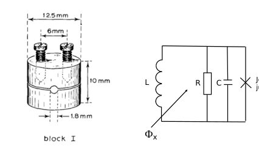
<figcaption class="paper-figure-caption"><b>Fig 1.</b> Fig1. Sample with Nb point contacts for measurement of flux transitions (left) [7] and equivalent circuit (right), block I refers to one of two Nb blocks used (reprinted with permis- sion from Elsevier)</figcaption>
</figure>
<figure class="paper-figure-card">
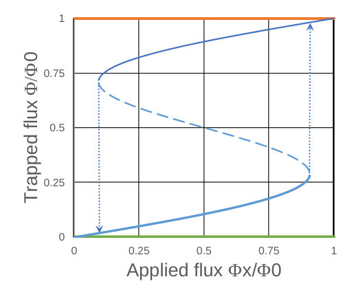
<figcaption class="paper-figure-caption"><b>Fig 2.</b> Fig2. Theoretical dependence without noise of normalized trapped flux on normalized applied flux for Ic = ∞(fully closed loop, red and green lines) and I = Ic sin  2πΦ</figcaption>
</figure>
<figure class="paper-figure-card">
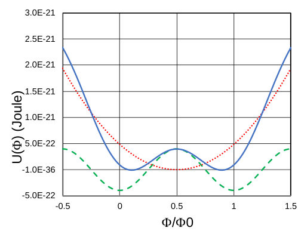
<figcaption class="paper-figure-caption"><b>Fig 3.</b> Fig3. Potential energy of the ring system vs. trapped flux for L = 4 at Φx = 0.5Φ0, solid blue curve is U for L = 1.1 nH and Ic= 1.2 µA, dashed green curve is cos term in equation 2, dotted red curve is quadratic term</figcaption>
</figure>
<figure class="paper-figure-card">
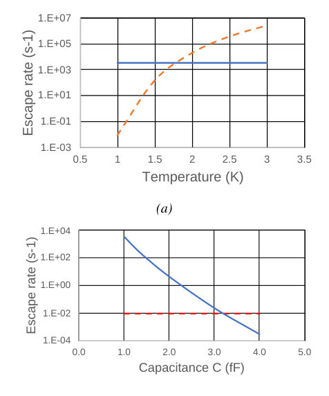
<figcaption class="paper-figure-caption"><b>Fig 4.</b> Fig4. Calculated dependence of Rth (red, dashed curves) and Rtun (blue, solid curves) on T (a) and on C at 1 K (b) in the absence of dissipation when the other baseline parameters are fixed</figcaption>
</figure>
<figure class="paper-figure-card">
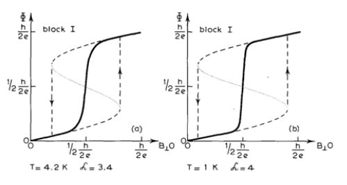
<figcaption class="paper-figure-caption"><b>Fig 5.</b> Fig5. Representative flux curves measured at 4.2 K and at 1 K, where B⊥O is the applied flux and block I refers to figure 1 [7] (reprinted with permission from Elsevier)</figcaption>
</figure>
</div>

<p><strong>Summary.</strong> This paper reviews early experimental attempts to observe Macroscopic Quantum Tunneling (MQT) in superconducting point contacts, drawing on theoretical models of potential energy barriers. By comparing calculated thermal and quantum tunneling escape rates, the authors argue that low-temperature flux transitions are likely quantum mechanical in origin. It provides crucial historical context for the development of superconducting quantum devices.</p>
<p><strong>Why it may be interesting.</strong> This work is foundational for understanding quantum dissipation and tunneling in superconducting circuits, directly informing the physics used in modern superconducting qubits and quantum computation platforms.</p>
<details>
<summary>Detailed structure</summary>
<p><strong>Main problem.</strong> The paper investigates the historical experimental evidence for Macroscopic Quantum Tunneling (MQT) in superconducting circuits, predating conclusive modern demonstrations.</p>
<p><strong>Main result.</strong> The analysis suggests that at very low temperatures (1 K), the observed flux transitions are best explained by quantum tunneling rather than classical thermal activation, although the conclusion is tempered by experimental uncertainties.</p>
<p><strong>Method.</strong> The authors analyze historical experimental data from Nb point contacts and apply theoretical models comparing thermal escape rates ($R_{th}$) derived from Arrhenius-like behavior against WKB tunneling rates ($R_{tun}$).</p>
<p><strong>Model / system.</strong> The system modeled is a superconducting ring containing a Josephson junction or point contact, whose dynamics are governed by a potential energy landscape $U(\Phi)$ dependent on the trapped magnetic flux $\Phi$.</p>
<p><strong>Key observables.</strong> Hysteresis in flux vs. applied flux curves, and the temperature dependence of the measured escape rates ($R_{th}$ vs. $R_{tun}$).</p>
<p><strong>Important parameters / regimes.</strong> Temperature ($T$), critical current ($I_c$), total inductance ($L$), and the superconducting flux quantum ($\Phi_0$).</p>
<p><strong>Assumptions / limitations.</strong> The analysis relies on the applicability of the WKB approximation for tunneling and assumes the system can be modeled by a simple potential barrier, though the author notes limitations regarding dissipation and noise sources.</p>
<p><strong>Figures summary.</strong> Figures illustrate the potential energy barrier $U(\Phi)$ vs. trapped flux, and compare calculated thermal and tunneling rates ($R_{th}$ vs. $R_{tun}$) as functions of temperature, inductance, and critical current.</p>
<p><strong>Paper structure.</strong> The paper reviews early 1979 experiments, establishes the theoretical framework using the potential energy landscape, calculates the ratio of thermal to tunneling rates, and concludes by contrasting these early findings with the later, conclusive work by Clarke et al.</p>
</details>
<details>
<summary>Abstract</summary>
<p>Before conclusive evidence of Macroscopic Quantum Tunneling, MQT, was published by Clarke, Devoret and Martinis in 1985, several other groups reported experimental results interpreted as MQT. The first, in chronological order, was in 1980 based on studies done at Leiden University in 1979. This paper looks back at these experiments on low capacitance Niobium point contacts in an rf SQUID, radio-frequency Superconducting Quantum Interference Device, configuration at temperatures between 1 and 4.2 K. The research was inspired by the theoretical predictions by Ivanchenko and Zilberman in 1969 on MQT in current-biased Josephson junctions and by Leggett in 1978 on MQT in closed loops with a superconducting weak link.</p>
</details>
<p><sub><a href="#top">↑ back to top</a></sub></p>

<p><a id="paper-2606.03637"></a></p>
<h3 id="chirality-resolved-spectroscopy-of-caroli-de-gennes-matricon-states-in-multiband-fetemath935mathsemath936math-superconductors"><a href="http://arxiv.org/abs/2606.03637v1">Chirality-resolved spectroscopy of Caroli-de Gennes-Matricon states in multiband FeTe$_{1-x}$Se$_{x}$ superconductors</a></h3>
<p><strong>Authors:</strong> T. Rõõm, A. Glezer Moshe, R. Nagarajan, U. Nagel, Hee Taek Yi, Seongshik Oh, G. Blumberg<br>
<strong>Type:</strong> experiment · <strong>Category:</strong> other · <strong>PDF:</strong> <a href="https://arxiv.org/pdf/2606.03637v1">https://arxiv.org/pdf/2606.03637v1</a><br>
<strong>Analysis basis:</strong> full PDF text, analyzed in chunks
<strong>Topic relevance:</strong> <code>spintronics-quantum-optics interface</code> <strong>3/5</strong> · <code>Keldysh / 2PI / non-Gaussian methods</code> <strong>1/5</strong> · <code>quantum optics experiment</code> <strong>1/5</strong></p>
<div class="figure-strip-hint">↔ Scroll figures horizontally</div>
<div class="paper-figures-scroll">
<figure class="paper-figure-card">
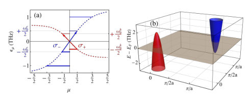
<figcaption class="paper-figure-caption"><b>Fig 1.</b> FIG. 1. (a) Energies of the CdGM states for electrons (blue) and holes (red), ϵk µ = ∆k tanh(µ∆k/Ek F ) [3]. ∆e = 1.3 THz, ∆h = 0.67 THz [18] and Ek F = ∆2 k/2πωk 0 for sample x = 0.38, Table I. Arrows show the transitions from the highest oc- cupied to the lowest unoccupied state, blue for left-handed and red for right-handed radiation. (b) A cartoon of two- band structure for iron-based superconductors with an elec- tron band (blue) at the Brillouin zone M point (m∗ e = 3.4m0, EF = 1.7 THz; m0 is the bare electron mass) and hole band (red) at the Γ point (m∗ h = 3.3m0, EF = −1.9 THz).</figcaption>
</figure>
<figure class="paper-figure-card">
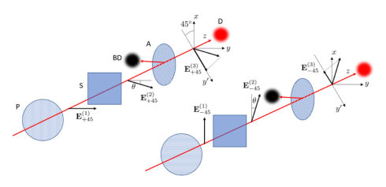
<figcaption class="paper-figure-caption"><b>Fig 2.</b> FIG. 2. The schematics of Faraday rotation measurement setup showing rotation θ. P - polarizer, S - sample, A - an- alyzer tilted by 45◦from the beam direction to reflect the wrong polarization into beam dump BD, D - detector. Left: incident electric field in +45◦orientation, E(1) +45 ∥y; Right: in −45◦orientation, E(1) −45 ∥x. E(2) ±45 and E(3) ±45 are electric field transmitted through the sample and after passing the analyzer with its polarization axis along y′, respectively. For a small clock-wise θ the amplitudes at the detector are E(3) +45 &gt; E(3) −45.</figcaption>
</figure>
<figure class="paper-figure-card">
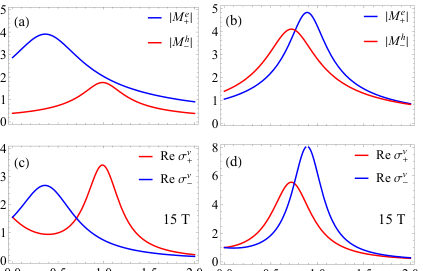
<figcaption class="paper-figure-caption"><b>Fig 3.</b> FIG. 4. The frequency-dependent vortex response in a two- component superconductor. (a, b) – electron and hole helical vortex mass amplitudes |M k ±(ω)|, Eq. (5); and (c, d) – vortex conductivity ℜσv ± in 15 T, Eq. (8); Parameters from Table I, (a, c) for x = 0.15 and (b, d) for x = 0.38.</figcaption>
</figure>
<figure class="paper-figure-card">
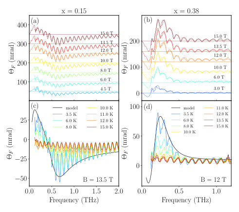
<figcaption class="paper-figure-caption"><b>Fig 4.</b> FIG. 3. Magnetic field and temperature dependence of Fara- day rotation spectra. (a) x = 0.15 and (b) x = 0.38: magnetic field dependence at 3.5 K. Solid lines are experimental data, dashed lines are fits. The curves are offset by 40 mrad and hor- izontal line marks zero rotation for each curve. (c) x = 0.15 and (d) x = 0.38: temperature dependence measured at 13.5 and 12 T correspondingly. The black lines in (c) and (d) show θF of a free-standing 40 nm thick FeTe1−xSex film at 3.5 K, Eq. (9), calculated using transmission t±, Eq. (11), with pa- rameters from Table I .</figcaption>
</figure>
<figure class="paper-figure-card">
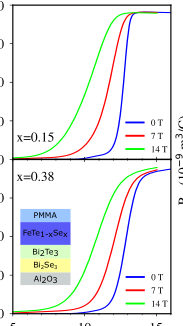
<figcaption class="paper-figure-caption"><b>Fig 5.</b> FIG. 5. Temperature dependence of resistivity for samples x = 0.15 (top) and x = 0.38 (bottom) at several magnetic fields. The right column shows the temperature dependence of the Hall coefficient RH. The sample layer structure can be seen in the inset. for light propagation in the substrate, ds (0.500 mm and 0.494 mm for x = 0.15 and x = 0.38 samples, respec- tively) and df are substrate and film thicknesses, σ∓(ω) is film optical conductivity, Eq. (7) and (8), and Z0 ≈377 Ω is the vacuum impedance.</figcaption>
</figure>
</div>

<p><strong>Summary.</strong> This work uses terahertz Faraday magneto-optics to investigate the quantized helical Caroli-de Gennes-Matricon (CdGM) states in FeTe1-xSe_x superconductors. By exploiting polarization selectivity, the researchers achieved band-resolved measurements of vortex-core dynamics. This confirms that THz magneto-optics is a powerful tool for studying helical excitations in complex, multiband superconductors.</p>
<p><strong>Why it may be interesting.</strong> The technique directly probes the angular momentum and band character of quasiparticles confined in vortices, which is a highly sensitive probe of superconducting pairing symmetry and multiband physics, relevant to open quantum systems dynamics.</p>
<details>
<summary>Detailed structure</summary>
<p><strong>Main problem.</strong> The study aims to probe the relaxation dynamics and helicity of quantized helical Caroli-de Gennes-Matricon (CdGM) states within the vortex cores of multiband FeTe1-xSe_x superconductors.</p>
<p><strong>Main result.</strong> The experiment successfully established terahertz magneto-optics as a direct probe for helical vortex-core excitations, providing band-resolved evidence for multiband CdGM states in iron-based superconductors.</p>
<p><strong>Method.</strong> Terahertz Faraday magneto-optical spectroscopy is employed to measure the polarization-selective optical response, which is sensitive to the helicity of the quasiparticles.</p>
<p><strong>Model / system.</strong> The physical system is epitaxial FeTe1-xSe_x thin films, modeled as nodeless multiband superconductors. The analysis uses a theoretical framework describing the vortex momentum decomposition into independent helical contributions from each superconducting band.</p>
<p><strong>Key observables.</strong> Faraday rotation ($    heta_F$), which is proportional to the difference in optical response between left- and right-circularly polarized light, and the resulting band-resolved vortex conductivity ($   ext{Re}\sigma_v^{\pm}(\omega)$).</p>
<p><strong>Important parameters / regimes.</strong> The analysis is sensitive to the superconducting coherence length ($\xi$), vortex mass, and the doping level ($x$), which systematically alters the relative contributions of electron and hole bands.</p>
<p><strong>Assumptions / limitations.</strong> The analysis assumes the superconducting state can be treated using non-interacting condensate approximations, and that the measured response is dominated by the vortex-core excitations.</p>
<p><strong>Figures summary.</strong> Figures illustrate the expected CdGM energies for electron and hole bands, the setup for Faraday rotation measurements, and the magnetic field/temperature dependence of the Faraday rotation for different doping levels.</p>
<p><strong>Paper structure.</strong> The paper first introduces the theoretical basis of CdGM states and the use of THz magneto-optics. It then details the theoretical modeling of the vortex conductivity in a multiband context. Finally, it presents experimental results showing the direct measurement of band-resolved, helical vortex excitations.</p>
</details>
<details>
<summary>Abstract</summary>
<p>We employ terahertz Faraday magneto-optical spectroscopy to probe the relaxation dynamics of quantized helical Caroli-de Gennes-Matricon (CdGM) states in epitaxial FeTe$_{1-x}$Se$_x$ thin films, nodeless multiband superconductors with short coherence lengths in the moderately clean limit. By exploiting polarization-selective optical transitions, we directly resolve the helicity and band origin of vortex-core quasiparticles. We observe long-lived CdGM resonances with opposite circular polarizations for electron- and hole-like bands. This enables independent, band-resolved determination of quasiparticle lifetimes, vortex masses, coherence lengths, and upper critical fields, and reveals their systematic evolution with isovalent substitution. The results establish terahertz magneto-optics as a direct probe of helical vortex-core excitations and provide dynamical evidence for multiband CdGM states in iron-based superconductors.</p>
</details>
<p><sub><a href="#top">↑ back to top</a></sub></p>

<p><a id="paper-2606.03041"></a></p>
<h3 id="geometric-aspects-of-spin-transport-in-magnetic-multilayers"><a href="http://arxiv.org/abs/2606.03041v1">Geometric aspects of spin transport in magnetic multilayers</a></h3>
<p><strong>Authors:</strong> Valentin Fadeev<br>
<strong>Type:</strong> theory · <strong>Category:</strong> other · <strong>PDF:</strong> <a href="https://arxiv.org/pdf/2606.03041v1">https://arxiv.org/pdf/2606.03041v1</a><br>
<strong>Analysis basis:</strong> full PDF text, analyzed in chunks
<strong>Topic relevance:</strong> <code>spintronics-quantum-optics interface</code> <strong>3/5</strong> · <code>Keldysh / 2PI / non-Gaussian methods</code> <strong>1/5</strong> · <code>non-equilibrium dynamics</code> <strong>1/5</strong></p>
<div class="figure-strip-hint">↔ Scroll figures horizontally</div>
<div class="paper-figures-scroll">
<figure class="paper-figure-card">
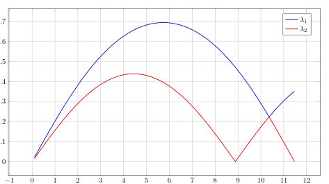
<figcaption class="paper-figure-caption"><b>Fig 1.</b> FIG. 2. Single-FM Weyl coordinates as a function of ferro- magnetic thickness.</figcaption>
</figure>
<figure class="paper-figure-card">
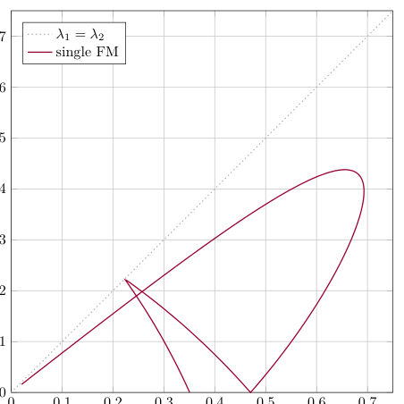
<figcaption class="paper-figure-caption"><b>Fig 2.</b> FIG. 3. Weyl-chamber trajectory for the single-FM thickness sweep. The diagonal λ1 = λ2 corresponds to spin-independent radial filtering.</figcaption>
</figure>
<figure class="paper-figure-card">

<figcaption class="paper-figure-caption"><b>Fig 3.</b> FIG. 1. Model geometry for the single-FM example. Identical nonmagnetic leads are attached to a single ferromagnetic layer whose thickness is swept.</figcaption>
</figure>
<figure class="paper-figure-card">
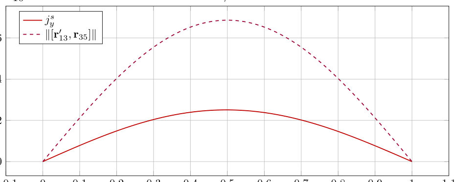
<figcaption class="paper-figure-caption"><b>Fig 4.</b> FIG. 5. Spin-current components in the spacer of the FM/NM/FM stack as the analyser angle is swept. The lower panel compares the out-of-plane spin current component with the noncommutativity diagnostic ∥[r′ 13, r35]∥.</figcaption>
</figure>
<figure class="paper-figure-card">
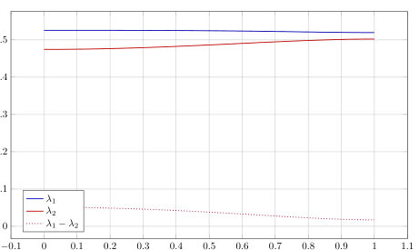
<figcaption class="paper-figure-caption"><b>Fig 5.</b> FIG. 6. Weyl coordinates for the FM/NM/FM stack as a function of analyser angle. The splitting λ1 −λ2 tracks the anisotropic part of the radial filtering response.</figcaption>
</figure>
</div>

<p><strong>Summary.</strong> This work develops a geometric theory for spin transport in magnetic multilayers by mapping the transfer matrix formalism onto the structure of noncompact Lie groups. It uses Iwasawa decomposition and Weyl-chamber variables to characterize spin filtering, while commutator analysis rigorously links the non-commutativity of spin filters to the generation of spin-transfer torque components.</p>
<p><strong>Why it may be interesting.</strong> The deep integration of geometric group theory (Iwasawa, Weyl chambers) into condensed matter transport physics provides a powerful, unifying mathematical language for understanding complex spin-filtering phenomena, analogous to how geometric methods are used in quantum optics or quantum field theory.</p>
<details>
<summary>Detailed structure</summary>
<p><strong>Main problem.</strong> To establish a rigorous geometric framework for describing spin-dependent electron transport through magnetic multilayers.</p>
<p><strong>Main result.</strong> The transport dynamics are characterized by a path-ordered exponential (transfer matrix) whose action can be decomposed using Iwasawa theory, revealing minimal transport invariants (Weyl-chamber variables) and linking non-commutativity to spin-torque generation.</p>
<p><strong>Method.</strong> The authors employ advanced group theory, specifically interpreting the transfer matrix as an element of a noncompact Lie group, utilizing Iwasawa decomposition, and analyzing commutator structures via the Baker-Campbell-Hausdorff expansion.</p>
<p><strong>Model / system.</strong> The system is magnetic multilayers (e.g., FM/NM/FM stacks) where spin-resolved electron transport is governed by the stationary Schrödinger equation. The model incorporates spin-orbit coupling (SOC) and is analyzed using transfer matrices derived from first-order spatial evolution equations.</p>
<p><strong>Key observables.</strong> Weyl-chamber variables ($\lambda_i$), Spin–Mueller–Jones tensor components, and the commutator norm $\|[r'_{13}, r_{35}]\|$ which quantifies out-of-plane spin current.</p>
<p><strong>Important parameters / regimes.</strong> SOC strength ($\alpha_{so}$), spacer thickness, and the relative magnetization angles ($  heta$) between adjacent ferromagnetic layers.</p>
<p><strong>Assumptions / limitations.</strong> The analysis relies on the transfer matrix formalism being equivalent to a path-ordered exponential, and the use of Iwasawa decomposition for the underlying Lie group structure.</p>
<p><strong>Figures summary.</strong> Figures illustrate the evolution of Weyl coordinates ($\lambda_1, \lambda_2$) as a function of analyzer angle or spacer thickness, demonstrating the separation of compact (spin rotation) and noncompact (filtering) information, and showing the deformation of the Weyl trajectory due to SOC.</p>
<p><strong>Paper structure.</strong> The paper progresses by first establishing the transfer matrix formalism, then applying group theory (Möbius/Iwasawa) to decompose the action. It subsequently analyzes the role of SOC and non-commuting reflections, culminating in the structural derivation of spin-torque components via commutator analysis.</p>
</details>
<details>
<summary>Abstract</summary>
<p>We discuss spin-dependent transfer-matrix formalism applied to magnetic multilayers in geometric terms. Starting from the stationary Schrödinger equation rewritten as a first-order spatial evolution problem, we interpret the transfer matrix as a path-ordered exponential and relate its matching-matrix construction to a noncompact group constraint. We thenconnect the induced Möbius action on reflection matrices to an Iwasawa decomposition, identify Weyl-chamber variables as the minimal noncompact transport invariants, and show how torque-related spin structures arise from compact-sector and commutator contributions. A sequence of multilayer examples illustrates the transition from pure spin filtering to controlled spin-orbit mixing and the resulting deformation of Weyl-chamber trajectories. We finally comment on the extension to higher-dimensional internal spaces relevant to orbital transport and realistic calculations.</p>
</details>
<p><sub><a href="#top">↑ back to top</a></sub></p>

<p><a id="paper-2606.03336"></a></p>
<h3 id="spin-wave-phase-modulation-using-magnetic-domain-walls-in-dipolarly-coupled-structures-for-non-volatile-magnonic-computation"><a href="http://arxiv.org/abs/2606.03336v1">Spin-wave phase modulation using magnetic domain walls in dipolarly coupled structures for non-volatile magnonic computation</a></h3>
<p><strong>Authors:</strong> Hanadi Mortada, Philipp Pirro, Alexandre Abbass Hamadeh<br>
<strong>Type:</strong> theory · <strong>Category:</strong> other · <strong>PDF:</strong> <a href="https://arxiv.org/pdf/2606.03336v1">https://arxiv.org/pdf/2606.03336v1</a><br>
<strong>Analysis basis:</strong> full PDF text, analyzed in chunks
<strong>Topic relevance:</strong> <code>spintronics-quantum-optics interface</code> <strong>3/5</strong> · <code>analog quantum simulation</code> <strong>1/5</strong> · <code>exotic spin models in light-matter</code> <strong>1/5</strong></p>
<div class="figure-strip-hint">↔ Scroll figures horizontally</div>
<div class="paper-figures-scroll">
<figure class="paper-figure-card">
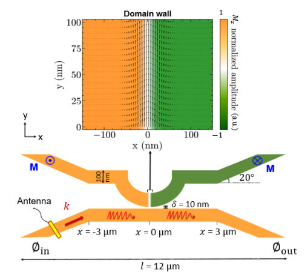
<figcaption class="paper-figure-caption"><b>Fig 1.</b> FIG. 1. Spin-wave phase shifter geometry. Schematic top view of the proposed Bi:YIG phase shifter consisting of a straight nanowaveg- uide dipolarly coupled to a half-ring waveguide separated by a 10 nm gap. SWs are excited at the left input port by a microwave an- tenna (yellow) at frequency f = 5.9 GHz with a fixed initial phase φin. The half-ring hosts a magnetic DW whose position xDW can be displaced along the ring. The color map shows the perpendicular magnetization component Mz in the half-ring, illustrating the 180◦</figcaption>
</figure>
<figure class="paper-figure-card">
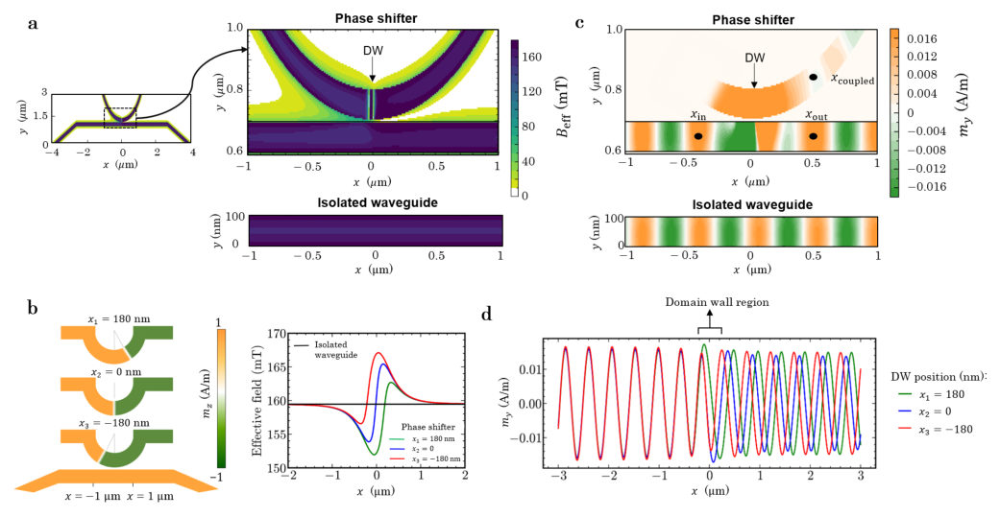
<figcaption class="paper-figure-caption"><b>Fig 2.</b> FIG. 2. Domain–wall–induced effective-field modulation and its impact on spin-wave propagation. (a) Spatial distribution of the effective magnetic field magnitude Beff in the straight waveguide dipolarly coupled to the half-ring hosting a DW at xDW = 0. For comparison, the effective-field distribution of an isolated straight waveguide (i.e., without the half-ring structure) is shown below. (b) One-dimensional line cuts of Beff extracted along the centerline of the straight waveguide (y = 0.65 µm, mid-width of the waveguide) for the isolated configuration (black) and for the coupled phase-shifter configuration at three representative DW positions: x1 = +180 nm (green), x2 = 0 nm (blue), and...</figcaption>
</figure>
<figure class="paper-figure-card">
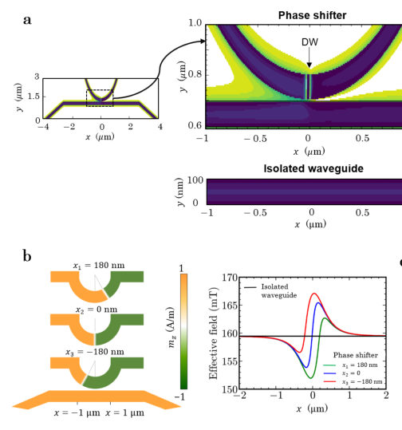
<figcaption class="paper-figure-caption"><b>Fig 3.</b> Figure 1 (shown in yellow). SW propagation is initiated by ap- plying a sinusoidal magnetic field in time, by = b0 sin(2π ft), with an amplitude of b0 = 1mT and a selected microwave fre- quency f of 5.9 GHz. The antenna excites forward-volume SWs (FVSW), which subsequently traverse the coupling re- gion and emerge from the output port with a modified phase. In the proposed design, the DW in the half-ring creates a localized perturbation of the magnetic environment, which is transferred non-locally to the straight waveguide by dipolar coupling, as illustrated in Figure 2. As a result, the effec- tive field (i.e. the total local magnetic field acting on the magnetization, given by the sum of...</figcaption>
</figure>
<figure class="paper-figure-card">
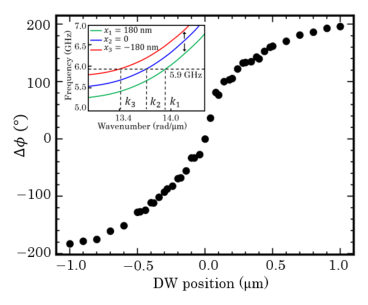
<figcaption class="paper-figure-caption"><b>Fig 4.</b> FIG. 3. Quantitative extraction of the domain-wall-controlled spin-wave phase shift. Extracted phase difference ∆φ = φin −φout as a function of DW position xDW, obtained from the phase of the FFT component at f = 5.9 GHz. The inset shows a demonstration of the effective field variation on the dispersion relation in the coupling region shown for three representative DW positions: x1 = +180 nm (green), x2 = 0 nm (blue), and x3 = −180 nm (red).</figcaption>
</figure>
</div>

<p><strong>Summary.</strong> This work proposes a novel, non-volatile phase shifter for magnonics by coupling a straight spin-wave waveguide to a half-ring containing a magnetic domain wall. By moving the DW, the local magnetic field and the spin-wave dispersion relation are dynamically altered, enabling continuous phase tuning without external bias fields or significant energy loss.</p>
<p><strong>Why it may be interesting.</strong> While the core physics is classical magnetism, the concept of using localized, non-dissipative field perturbations (like those from DWs) to engineer wave properties (like phase) is analogous to controlling boundary conditions or potentials in quantum wave mechanics, making it relevant to understanding engineered quantum systems.</p>
<details>
<summary>Detailed structure</summary>
<p><strong>Main problem.</strong> The core challenge is developing a controllable, non-volatile, and energy-efficient phase shifter for spin-wave (SW)-based logic and information processing.</p>
<p><strong>Main result.</strong> The authors demonstrate that displacing a magnetic domain wall (DW) in an adjacent waveguide can continuously tune the SW phase shift over a wide range by modulating the local dispersion relation via dipolar coupling.</p>
<p><strong>Method.</strong> The study relies on micromagnetic simulations to model the coupled magnetostrictive system and analyze the resulting spin-wave propagation characteristics.</p>
<p><strong>Model / system.</strong> The physical system is a hybrid structure: a straight nanoscale waveguide dipolarly coupled to a half-ring waveguide, both made of Bi-doped Yttrium Iron Garnet (Bi:YIG). The phase shift is controlled by the static position of a magnetic domain wall (DW) within the half-ring.</p>
<p><strong>Key observables.</strong> The primary observable is the tunable phase shift ($\Delta\varphi$) of the spin waves, which is shown to be strongly dependent on the DW position ($x_{	ext{DW}}$).</p>
<p><strong>Important parameters / regimes.</strong> Key parameters include the coupling gap ($\delta = 10 	ext{ nm}$), the material properties of Bi:YIG, and the operating frequency (e.g., 5.9 GHz).</p>
<p><strong>Assumptions / limitations.</strong> The analysis assumes the DW maintains a stable Bloch-type configuration and that the phase tuning mechanism is dominated by dispersion engineering rather than scattering losses.</p>
<p><strong>Figures summary.</strong> Figures illustrate the geometry, the spatial distribution of the effective magnetic field ($   ext{B}_{    ext{eff}}$) modulated by the DW position, and the resulting continuous, non-linear dependence of the phase shift ($\Delta\varphi$) on the DW position.</p>
<p><strong>Paper structure.</strong> The paper introduces the need for a controllable phase shifter, details the hybrid dipolar-coupled structure, uses micromagnetic simulations to model the field and phase shift dependence on DW position, and concludes by emphasizing the non-volatile and energy-efficient nature of the mechanism.</p>
</details>
<details>
<summary>Abstract</summary>
<p>A controllable phase shifter is a key component for spin-wave-based logic and information processing devices. Here, we propose a domain-wall-position-controlled spin-wave phase shifter that exploits dipolar coupling between two closely spaced waveguides to enable continuous phase tuning over a range approaching 360degrees while keeping the spin-wave amplitude constant. Using micromagnetic simulations, we model a bias-free hybrid structure composed of a nanoscale waveguide magnetostatically coupled to a half-ring-shaped structure both made from bismuth-doped yttrium iron garnet with strong perpendicular magnetic anisotropy. Displacing a domain wall in the half-ring modulates the dispersion relation in the adjacent straight waveguide due to the changed magnetostatic interaction, providing a compact and dynamically reconfigurable phase-shifting mechanism. This approach offers precise and non-volatile control over spin-wave propagation and is compatible with energy-efficient magnonic logic architectures.</p>
</details>
<p><sub><a href="#top">↑ back to top</a></sub></p>

<p><a id="paper-2606.03932"></a></p>
<h3 id="emergent-hall-viscosity-in-the-integer-quantum-hall-phases-of-graphene-like-systems"><a href="http://arxiv.org/abs/2606.03932v1">Emergent Hall viscosity in the integer quantum Hall phases of graphene-like systems</a></h3>
<p><strong>Authors:</strong> M. Selch, M. A. Zubkov<br>
<strong>Type:</strong> theory · <strong>Category:</strong> other · <strong>PDF:</strong> <a href="https://arxiv.org/pdf/2606.03932v1">https://arxiv.org/pdf/2606.03932v1</a><br>
<strong>Analysis basis:</strong> full PDF text, analyzed in chunks
<strong>Topic relevance:</strong> <code>Keldysh / 2PI / non-Gaussian methods</code> <strong>2/5</strong> · <code>methods for driven-dissipative</code> <strong>2/5</strong> · <code>analog quantum simulation</code> <strong>1/5</strong> · <code>non-equilibrium dynamics</code> <strong>1/5</strong></p>
<div class="figure-strip-hint">↔ Scroll figures horizontally</div>
<div class="paper-figures-scroll">
<figure class="paper-figure-card">
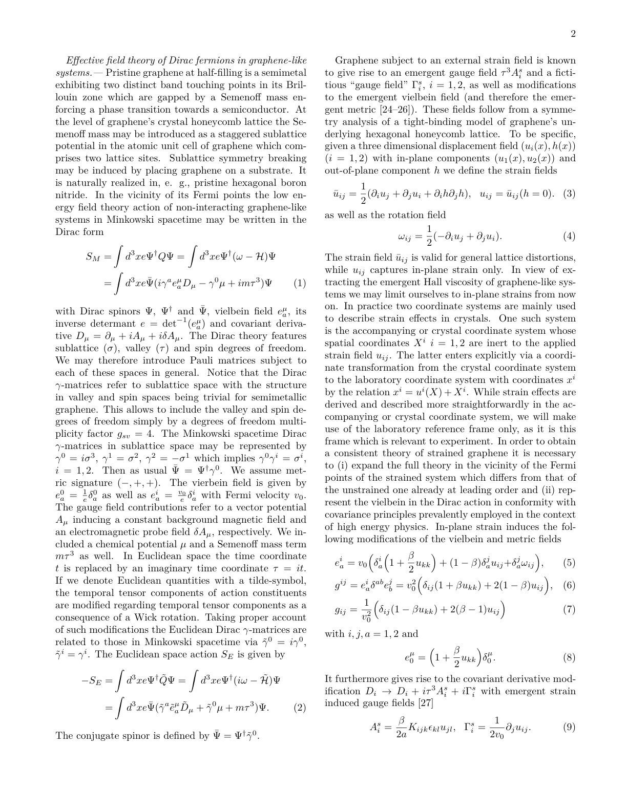
<figcaption class="paper-figure-caption"><b>Fig 1.</b> Low-resolution page preview, page 2</figcaption>
</figure>
<figure class="paper-figure-card">
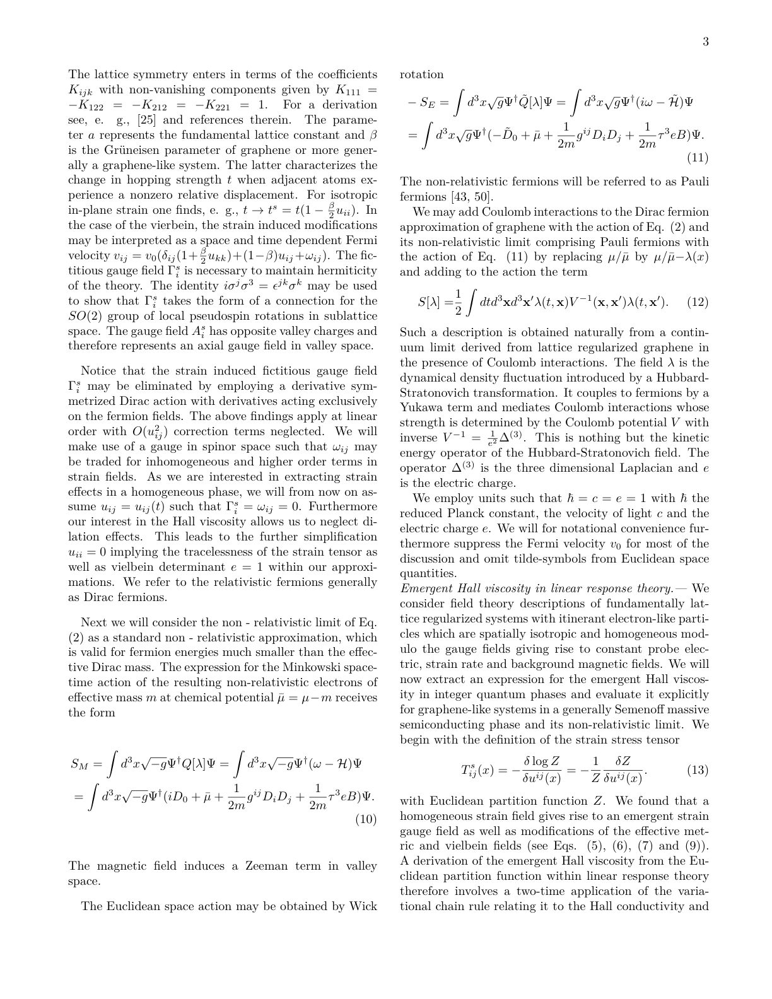
<figcaption class="paper-figure-caption"><b>Fig 2.</b> Low-resolution page preview, page 3</figcaption>
</figure>
<figure class="paper-figure-card">

<figcaption class="paper-figure-caption"><b>Fig 3.</b> Low-resolution page preview, page 4</figcaption>
</figure>
<figure class="paper-figure-card">

<figcaption class="paper-figure-caption"><b>Fig 4.</b> Low-resolution page preview, page 5</figcaption>
</figure>
<figure class="paper-figure-card">

<figcaption class="paper-figure-caption"><b>Fig 5.</b> Low-resolution page preview, page 6</figcaption>
</figure>
</div>

<p><strong>Summary.</strong> This paper develops a unified theory for the emergent Hall viscosity in graphene-like quantum Hall systems. It distinguishes between geometric and electronic contributions, deriving explicit formulas using advanced field theory techniques like Wigner-Weyl calculus. The work establishes the topological quantization of this viscosity for massless Dirac fermions, providing a robust theoretical framework for understanding strain-induced transport phenomena.</p>
<p><strong>Why it may be interesting.</strong> The rigorous derivation of topological invariants for transport coefficients like Hall viscosity provides a deep connection between geometry, topology, and condensed matter transport, which is relevant for understanding exotic quantum states.</p>
<details>
<summary>Detailed structure</summary>
<p><strong>Main problem.</strong> To unify and explicitly determine the 'emergent Hall viscosity' in integer quantum Hall phases of graphene-like systems, distinguishing between contributions relative to the strain field versus those relative to an emergent vielbein or metric field.</p>
<p><strong>Main result.</strong> The emergent Hall viscosity is decomposed into 'geometric' and 'electronic' contributions, and its calculation yields quantized topological invariants for the massless Dirac case, which are robust under certain symmetries.</p>
<p><strong>Method.</strong> The analysis employs effective field theory methods, linear response theory within Wigner-Weyl calculus, and Green's function techniques to derive response functions.</p>
<p><strong>Model / system.</strong> The study focuses on graphene-like systems (Dirac/Pauli fermions) in the presence of strain and a background magnetic field, covering both semimetallic and semiconducting phases.</p>
<p><strong>Key observables.</strong> Hall viscosity ($\eta_{em}^H$), Hall conductivity ($\sigma_H$), and associated topological invariants ($N_\sigma, N_\eta$).</p>
<p><strong>Important parameters / regimes.</strong> Magnetic field ($B$), chemical potential ($\mu$), and filling factors ($eta, \alpha$).</p>
<p><strong>Assumptions / limitations.</strong> The analysis relies on approximations such as linear response theory, gradient expansions, and the use of the Moyal star product in Wigner-Weyl calculus.</p>
<p><strong>Figures summary.</strong> Not specified.</p>
<p><strong>Paper structure.</strong> The paper develops the formalism by first defining the problem in terms of strain and metric variations, then deriving response functions using Wigner-Weyl calculus, and finally calculating the topological invariants for both Dirac and Pauli fermion limits.</p>
</details>
<details>
<summary>Abstract</summary>
<p>We explicitly distinguish Hall viscosity as defined relative to the strain field vs. relative to an emergent vielbein or metric field and discuss it for graphene-like systems. Aside from the gravitational or vielbein/metric related <code>geometric'' Hall viscosity prevailing throughout the literature, a contribution proportional to the Hall conductivity, the</code>electronic'' Hall viscosity, due to the emergent strain induced gauge field exists. We unify both contributions within the ``emergent'' Hall viscosity, determine it explicitly for graphene in the semimetal and Semenoff semiconducting phases for integer quantum Hall states and in the latter case compare it to its non-relativistic limit. Under these circumstances two topological invariants enter the emergent Hall viscosity in the presence of translational and rotational symmetry which we derive in the Green function representation of Wigner-Weyl calculus. We discuss experimental perspectives for extracting the emergent Hall viscosity.</p>
</details>
<p><sub><a href="#top">↑ back to top</a></sub></p>

<p><a id="paper-2606.02730"></a></p>
<h3 id="anharmonic-lattice-dynamics-and-superconductivity-in-strained-bulk-and-surface-niobium"><a href="http://arxiv.org/abs/2606.02730v1">Anharmonic lattice dynamics and superconductivity in strained bulk and surface niobium</a></h3>
<p><strong>Authors:</strong> Mihir Ranjan Sahoo, Roman Lucrezi, Pedro Nunes Ferreira, Chia-Nien Tsai, Matthew Julian, Rohit P. Prasankumar, Mahmoud I. Hussein, Christoph Heil<br>
<strong>Type:</strong> theory · <strong>Category:</strong> other · <strong>PDF:</strong> <a href="https://arxiv.org/pdf/2606.02730v1">https://arxiv.org/pdf/2606.02730v1</a><br>
<strong>Analysis basis:</strong> full PDF text, analyzed in chunks
<strong>Topic relevance:</strong> <code>Keldysh / 2PI / non-Gaussian methods</code> <strong>2/5</strong> · <code>methods for driven-dissipative</code> <strong>2/5</strong></p>
<div class="figure-strip-hint">↔ Scroll figures horizontally</div>
<div class="paper-figures-scroll">
<figure class="paper-figure-card">

<figcaption class="paper-figure-caption"><b>Fig 1.</b> FIG. 1. Parity plot of MLIP-predicted versus DFT atomic forces for Nb bulk and surface configurations. Each color corresponds to an MLIP trained on a progressively expanded dataset: Bulk+Nb(110) (red), Bulk+Nb(110)+Nb(001) (blue), and Bulk+Nb(110)+Nb(001)+Nb(111) (green). The diagonal line indi- cates perfect agreement.</figcaption>
</figure>
<figure class="paper-figure-card">

<figcaption class="paper-figure-caption"><b>Fig 2.</b> FIG. 2. (a) Crystal structure of bulk Nb; dashed and solid lines indicate the conventional and primitive unit cells, respectively. (b) Electronic band structure along high-symmetry directions with the total DOS (states/eV) shown on the right; the dashed horizontal line marks the Fermi level (E = 0). (c) Nb 4d orbital-projected Fermi surface colored by the 4d orbital weight (color scale shown below). (d) Harmonic phonon dispersion with the phonon DOS, Eliashberg spectral function α2F(ω), and cumulative EPC constant λ(ω). The line thickness in the dispersion is proportional to the mode-resolved EPC strength. (e) Harmonic phonon dispersions at four lattice constants (a = 3.31 Å being the...</figcaption>
</figure>
<figure class="paper-figure-card">

<figcaption class="paper-figure-caption"><b>Fig 3.</b> FIG. 3. Eliashberg spectral function α2F(ω) (black) and functional derivative δTc/δα2F(ω) (orange) for bulk Nb at four lattice constants (panels a–d). Vertical lines mark characteristic energy scales: the peak positions of α2F(ω) (αM, black dashed) and δTc/δα2F(ω) (δM, orange dashed), the optimal pairing scale 7kBTc (blue dash-dotted), and the logarithmic average phonon frequency ωlog (green dotted). The lattice constant and calculated Tc for each case are given in the panel insets.</figcaption>
</figure>
<figure class="paper-figure-card">

<figcaption class="paper-figure-caption"><b>Fig 4.</b> FIG. 4. Side-view atomic structures and corresponding phonon dispersions of Nb slabs: (a) Nb(001), (b) Nb(110), and (c) Nb(111). In each panel, the left subfigure shows the phonon dispersion along high-symmetry directions, while the right subfigure presents the atomic slab structure. Black lines denote harmonic phonon spectra, while red lines represent anharmonic phonon dispersions obtained from SSCHA calculations.</figcaption>
</figure>
<figure class="paper-figure-card">

<figcaption class="paper-figure-caption"><b>Fig 5.</b> FIG. 5. Temperature dependence of the superconducting gap ∆0 obtained from isotropic Migdal–Eliashberg calculations for the Nb(001), Nb(110), and Nb(111) slabs. Dots are calculated values; solid lines are guides to the eye.</figcaption>
</figure>
</div>

<p><strong>Summary.</strong> This work uses first-principles calculations to map out how strain and surface termination tune superconductivity in Niobium. By incorporating anharmonic lattice dynamics, the authors show that tensile strain boosts $T_c$ in the bulk, and the (001) surface provides the best pairing strength among the analyzed terminations. The study highlights the crucial, interconnected roles of lattice anharmonicity and dimensionality in superconducting material design.</p>
<p><strong>Why it may be interesting.</strong> While focused on BCS-type superconductivity, the rigorous treatment of anharmonic lattice dynamics and the use of MLIPs to accelerate complex many-body calculations are highly relevant to understanding quantum materials far from equilibrium.</p>
<details>
<summary>Detailed structure</summary>
<p><strong>Main problem.</strong> The study investigates how homogeneous strain and crystallographic surface orientation modify the vibrational and superconducting properties of niobium (Nb).</p>
<p><strong>Main result.</strong> Tensile strain significantly enhances the superconducting transition temperature ($T_c$) in bulk Nb, while the $ ext{Nb}(001)$ surface exhibits the highest $T_c$ among clean slabs, demonstrating that strain, surface effects, and anharmonicity are key tuning mechanisms.</p>
<p><strong>Method.</strong> The research employs first-principles calculations (DFT) combined with advanced lattice dynamics treatments, including Machine-Learning Interatomic Potentials (MLIP) accelerated Stochastic Self-Consistent Harmonic Approximation (SSCHA) to capture anharmonic effects.</p>
<p><strong>Model / system.</strong> The physical system is Niobium (Nb), analyzed in both its bulk form and as clean, free-standing ultra-thin slabs with (001), (110), and (111) terminations. Superconductivity is modeled using the electron-phonon coupling (EPC) framework.</p>
<p><strong>Key observables.</strong> Superconducting transition temperature ($T_c$), electron-phonon coupling constant ($\lambda$), Eliashberg spectral function ($\alpha^2F(\omega)$), and phonon spectra.</p>
<p><strong>Important parameters / regimes.</strong> Tensile strain (up to $\sim 6\%$ expansion), surface orientation ((001), (110), (111)), and anharmonic renormalization effects.</p>
<p><strong>Assumptions / limitations.</strong> The calculated slab systems are idealized, clean, free-standing crystalline reference systems, and the harmonic approximation fails for surfaces, necessitating anharmonic corrections.</p>
<p><strong>Figures summary.</strong> Figures illustrate phonon dispersions, $\alpha^2F(\omega)$ for different strain/surface conditions, and comparisons between MLIP-predicted and DFT atomic forces for various Nb structures.</p>
<p><strong>Paper structure.</strong> The paper systematically analyzes the effects of strain on bulk Nb, then addresses the necessity of anharmonic corrections for surface slabs, comparing the resulting $T_c$ and EPC strength across different surface terminations.</p>
</details>
<details>
<summary>Abstract</summary>
<p>Using first-principles calculations, we investigate how homogeneous strain and crystallographic surface orientation modify the vibrational and superconducting properties of niobium. For bulk Nb, tensile strain strongly softens the phonon spectrum and enhances the electron--phonon coupling, increasing the superconducting transition temperature from 9.5 K at equilibrium to 14.5 K at $\sim\!6\%$ lattice expansion. For the low-index Nb(001), Nb(110), and Nb(111) surfaces, harmonic phonon calculations exhibit imaginary modes, showing that anharmonic lattice effects are essential. To treat these effects efficiently, we train Nb-specific machine-learning interatomic potentials on bulk and slab first-principles configurations and use them to accelerate stochastic self-consistent harmonic approximation calculations, thereby obtaining anharmonically renormalized phonon modes that are combined with density-functional perturbation theory electron--phonon matrix elements to construct the Eliashberg spectral function. Among the clean free-standing slabs considered here, Nb(001) exhibits the strongest electron--phonon coupling and the highest calculated transition temperature of 10.0 K, while Nb(110) and Nb(111) show progressively reduced pairing strength. Finally, by analyzing the Eliashberg spectral function and the functional derivative $δT_\text{c}/δα^2F(ω)$, we identify the phonon energy ranges most effective for superconducting pairing. Our results show that strain, surface termination, and anharmonic phonon renormalization provide complementary and interrelated microscopic routes for tuning superconductivity in Nb.</p>
</details>
<p><sub><a href="#top">↑ back to top</a></sub></p>

<p><a id="paper-2606.03285"></a></p>
<h3 id="spatially-uniform-and-defect-tolerant-plasmonic-responses-in-3d-printed-gold-nanoparticle-assemblies"><a href="http://arxiv.org/abs/2606.03285v1">Spatially Uniform and Defect-Tolerant Plasmonic Responses in 3D printed Gold Nanoparticle Assemblies</a></h3>
<p><strong>Authors:</strong> Vasanthan Devaraj, Sunghyun Kwak, Hyeongjip Kim, Sang-Keun Sung, Jong-Min Lee, Thomas Zentgraf, Won-Geun Kim<br>
<strong>Type:</strong> both · <strong>Category:</strong> other · <strong>PDF:</strong> <a href="https://arxiv.org/pdf/2606.03285v1">https://arxiv.org/pdf/2606.03285v1</a><br>
<strong>Analysis basis:</strong> full PDF text, analyzed in chunks
<strong>Topic relevance:</strong> <code>analog quantum simulation</code> <strong>2/5</strong> · <code>interference shaping light</code> <strong>1/5</strong></p>
<div class="figure-strip-hint">↔ Scroll figures horizontally</div>
<div class="paper-figures-scroll">
<figure class="paper-figure-card">

<figcaption class="paper-figure-caption"><b>Fig 1.</b> Figure 1 | (a) Schematic illustration of the meniscus-guided 3D printing of AuNPs. (b) Schematic</figcaption>
</figure>
<figure class="paper-figure-card">

<figcaption class="paper-figure-caption"><b>Fig 2.</b> Figure 2 | (a) Dark-field scattering spectra acquired from the bottom, middle, and top positions of a</figcaption>
</figure>
<figure class="paper-figure-card">

<figcaption class="paper-figure-caption"><b>Fig 3.</b> Figure 3 | Near-field intensity (bottom) and surface charge (top) distributions of a representative 3D</figcaption>
</figure>
<figure class="paper-figure-card">

<figcaption class="paper-figure-caption"><b>Fig 4.</b> Figure 4 | (a–c) SEM images of a core-only AuNP pillar formed with 80 nm AuNPs (n1=2 particles/fL)</figcaption>
</figure>
<figure class="paper-figure-card">

<figcaption class="paper-figure-caption"><b>Fig 5.</b> Figure 5 | (a) Dark-field scattering spectra of 3D AuNP assemblies with different compositions,</figcaption>
</figure>
</div>

<p><strong>Summary.</strong> This work establishes design principles for creating highly reliable 3D plasmonic nanostructures using printed gold nanoparticles. By demonstrating that the optical response is an ensemble average, the authors show the system is robust to structural defects. Furthermore, they prove this response can be actively tuned by engineering the composition using core-satellite nanoparticle arrangements.</p>
<p><strong>Why it may be interesting.</strong> The concept of robust, ensemble-averaged optical properties emerging from disordered, many-body interactions is analogous to studying collective excitations in disordered quantum systems, providing experimental validation for concepts of emergent order.</p>
<details>
<summary>Detailed structure</summary>
<p><strong>Main problem.</strong> The paper investigates how to create plasmonic nanoparticle assemblies that maintain uniform and predictable optical responses despite structural disorder, fabrication variability, and compositional changes.</p>
<p><strong>Main result.</strong> The ensemble-averaged plasmonic response is shown to be robust and defect-tolerant due to volumetric averaging, and this response can be actively tuned by engineering the core-satellite nanoparticle architecture.</p>
<p><strong>Method.</strong> The study combines experimental measurements (dark-field scattering, SERS) with advanced electromagnetic simulations (FDTD/Maxwell solvers) to model the collective optical behavior.</p>
<p><strong>Model / system.</strong> The physical system is 3D printed assemblies of gold nanoparticles (AuNPs) fabricated via meniscus-guided assembly. The model incorporates core-satellite structures and simulates the effect of various structural defects (voids, missing particles).</p>
<p><strong>Key observables.</strong> Spatially-resolved dark-field scattering spectra, near-field intensity/surface charge distributions, and Surface-Enhanced Raman Scattering (SERS) spectra.</p>
<p><strong>Important parameters / regimes.</strong> High-aspect-ratio pillars, core-satellite ratios, excitation wavelengths (633 nm vs 785 nm), and the characteristic plasmon delocalization length.</p>
<p><strong>Assumptions / limitations.</strong> The ensemble response is governed by volumetric averaging, and the simulation models use simplified effective-gap approximations for the complex, stochastic printed junctions.</p>
<p><strong>Figures summary.</strong> Figures demonstrate the printing process, structural characterization via SEM, and comparative plots showing the stability of scattering spectra and SERS signals under varying defect levels and satellite concentrations.</p>
<p><strong>Paper structure.</strong> The paper systematically moves from characterizing the basic robust response of large assemblies to introducing compositional modulation via core-satellite structures, culminating in detailed analysis of defect tolerance using both simulation and spectroscopy.</p>
</details>
<details>
<summary>Abstract</summary>
<p>Three-dimensional (3D) assemblies of gold nanoparticles (AuNPs) offer a rich platform for plasmonic coupling and near-field engineering, yet their optical behavior is often complex due to structural disorder and fabrication-induced variability. Here, we present a systematic optical investigation of large-scale 3D AuNP assemblies fabricated via meniscus-guided assembly, focusing on the reproducibility and spatial uniformity. Spatially-resolved dark-field scattering measurements reveal that high-aspect-ratio AuNP pillars exhibit uniform scattering spectra along their height and across different pillars, despite variations in geometry and structure. Electromagnetic simulations suggest that this robustness arises from an ensemble-averaged plasmonic response governed by many local coupling regions within a finite plasmon delocalization length. Simulated near-field and surface charge distributions suggest that the broad ensemble response remains spatially distributed under representative structural perturbations, consistent with volumetric averaging. Building on this robust platform, we introduce compositional modulation through a core-satellite architecture by incorporating smaller AuNPs. This yields a composition-dependent spectral redistribution, including an additional long-wavelength spectral feature in the core-satellite assemblies. Wavelength-dependent surface-enhanced Raman scattering measurements reveal contrasting responses under 633 and 785 nm excitation, reflecting redistribution of local plasmonic coupling pathways. These results establish design principles for robust 3D plasmonic nanoparticle assemblies with ensemble-averaged and composition-tunable optical responses.</p>
</details>
<p><sub><a href="#top">↑ back to top</a></sub></p>

<p><a id="paper-2606.03497"></a></p>
<h3 id="ferroelectric-tunable-quantum-nonlinearity-of-chiral-bloch-electrons-in-a-moire-system"><a href="http://arxiv.org/abs/2606.03497v1">Ferroelectric-tunable quantum nonlinearity of chiral Bloch electrons in a moiré system</a></h3>
<p><strong>Authors:</strong> Zitian Pan, Jundong Zhu, Yu Hong, Jingwei Dong, Dongxia Shi, Kenji Watanabe, Takashi Taniguchi, Luojun Du, Wei Yang, Guangyu Zhang<br>
<strong>Type:</strong> experiment · <strong>Category:</strong> other · <strong>PDF:</strong> <a href="https://arxiv.org/pdf/2606.03497v1">https://arxiv.org/pdf/2606.03497v1</a><br>
<strong>Analysis basis:</strong> full PDF text, analyzed in chunks
<strong>Topic relevance:</strong> <code>analog quantum simulation</code> <strong>1/5</strong> · <code>driven-dissipative phase transition</code> <strong>1/5</strong> · <code>non-equilibrium dynamics</code> <strong>1/5</strong> · <code>spintronics-quantum-optics interface</code> <strong>1/5</strong></p>
<div class="figure-strip-hint">↔ Scroll figures horizontally</div>
<div class="paper-figures-scroll">
<figure class="paper-figure-card">

<figcaption class="paper-figure-caption"><b>Fig 1.</b> Fig. 1. Ferroelectricity in high-equality hBN/TDBG device. a, Schematic of the device structure. b, SHG response of top (red) and bottom (blue) layer hBN under excitation laser with wavelength of 1064 nm. c,d, Longitudinal resistance 𝑅𝑥𝑥 as a function of top gate 𝑉𝑡 and bottom gate 𝑉𝑏. The arrows indicate the scanning direction, where the solid one is fast scan and the dashed one is slow scan. Inset: enlarged view of the dashed box region, plotted on linear scale. e, 𝑅𝑥𝑥 as a function of carrier density n and magnetic field B under zero displacement field D. f, Transfer curves of 𝑉𝑡 in both forward and backward scanning direction under 𝑉𝑏= 0 V. g, Transfer curves of 𝑉𝑏 in both forward and...</figcaption>
</figure>
<figure class="paper-figure-card">

<figcaption class="paper-figure-caption"><b>Fig 2.</b> Fig. 2. Thermodynamic behaviors of the ferroelectricity. a, Transfer curves of Vt in both forward and backward scanning direction under 𝑉𝑏= −5.65 V. b, Ferroelectric switching under pulses with different amplitude. c, Critical width 𝑡𝑐 to switch the polarization as a function of the high voltage level of the pulse 𝑉𝐻 at 𝑇= 1.7 K. The</figcaption>
</figure>
</div>

<p><strong>Summary.</strong> This paper reports on ferroelectric control over quantum nonlinear transport in a moiré graphene heterostructure. By utilizing the ferroelectricity in the top hBN layer, the authors demonstrated a switchable nonlinear Hall effect linked to Berry curvature. This establishes the platform as a promising material system for electrically programmable quantum electronic devices.</p>
<p><strong>Why it may be interesting.</strong> This work provides an experimental realization of electrically programmable quantum geometric properties (Berry curvature) using ferroelectric switching, which is highly relevant for developing novel quantum electronic devices.</p>
<details>
<summary>Detailed structure</summary>
<p><strong>Main problem.</strong> The study investigates the coupling between sliding ferroelectricity and quantum nonlinear transport in a moiré heterostructure, aiming to demonstrate ferroelectric control over quantum nonlinearities.</p>
<p><strong>Main result.</strong> The authors demonstrated a ferroelectric-switchable nonlinear Hall effect, confirming a direct coupling between the ferroelectric polarization and the system's Berry curvature, which is robust and non-volatile.</p>
<p><strong>Method.</strong> The research combines electrical transport measurements (measuring $R_{xx}$ and nonlinear Hall response $\langle V_{xy}^{2\omega} 
angle$) with optical characterization ($    ext{SHG}$) and voltage pulse measurements to probe switching kinetics.</p>
<p><strong>Model / system.</strong> The physical platform is a hexagonal boron nitride ($   ext{hBN}$) encapsulated twisted double-bilayer graphene ($ ext{TDBG}$) moiré heterostructure, which exhibits ferroelectricity due to rhombohedral stacking in the top $    ext{hBN}$ layer.</p>
<p><strong>Key observables.</strong> Nonlinear Hall response ($\langle V_{xy}^{2\omega} 
angle$), longitudinal resistance ($R_{xx}$), polarization magnitude ($P_{2D}$), and ferroelectric switching kinetics (nucleation time $t_c$).</p>
<p><strong>Important parameters / regimes.</strong> Temperature range ($1.7-200	ext{ K}$), applied gate voltages ($V_t, V_b$), and excitation electric fields.</p>
<p><strong>Assumptions / limitations.</strong> The ferroelectricity is attributed specifically to the rhombohedral stacking in the top $    ext{hBN}$ layer, and the nonlinear effect is linked to chiral scattering induced by Berry curvature.</p>
<p><strong>Figures summary.</strong> Figures detail $   ext{SHG}$ confirmation of ferroelectricity, $R_{xx}$ shifts under gate voltage sweeps, and hysteresis loops for the nonlinear Hall effect ($\langle V_{xy}^{2\omega} 
angle$) showing switching behavior under voltage pulses.</p>
<p><strong>Paper structure.</strong> The paper systematically confirms the ferroelectric nature of the system, characterizes the temperature-independent polarization, and then demonstrates the ferroelectric-switchable nonlinear Hall effect, establishing the coupling mechanism.</p>
</details>
<details>
<summary>Abstract</summary>
<p>Sliding ferroelectricity in van der Waals materials shows great potential for designing robust memory devices. However, its thermodynamic behaviors and the coupling with certain quantum effects remain largely unexplored. Here, we demonstrate ferroelectric control over quantum nonlinear transport in a hexagonal boron nitride (hBN) encapsulated twisted double-bilayer graphene moiré heterostructure. The ferroelectricity is attributed to the presence of rhombohedral stacking in the top hBN, confirmed by both electrical transport and optical second harmonic generation (SHG) measurements. Remarkably, the polarization magnitude remains temperature-independent across 1.7-200 K, while nucleation time exhibits thermally activated behavior, decreasing with increasing temperature. Furthermore, we demonstrate a ferroelectric-switchable nonlinear Hall effect, attributed to the chiral scattering induced by Berry curvature, with outstanding fatigue-resistant and nonvolatility, demonstrating direct coupling between sliding ferroelectricity and quantum geometric properties. Our results establish sliding ferroelectrics as a platform for exploring electrically programmable Berry curvature physics.</p>
</details>
<p><sub><a href="#top">↑ back to top</a></sub></p>

<p><a id="paper-2606.02858"></a></p>
<h3 id="negative-temperature-coefficient-of-gilbert-damping-in-magnetic-bilayers"><a href="http://arxiv.org/abs/2606.02858v1">Negative temperature coefficient of Gilbert damping in magnetic bilayers</a></h3>
<p><strong>Authors:</strong> Lulu Cao, Yuting Gong, Xianyang Lu, Yongbing Xu, Ya Zhai, Jing Wu, Roy W. Chantrell, Richard F. L. Evans<br>
<strong>Type:</strong> both · <strong>Category:</strong> other · <strong>PDF:</strong> <a href="https://arxiv.org/pdf/2606.02858v1">https://arxiv.org/pdf/2606.02858v1</a><br>
<strong>Analysis basis:</strong> full PDF text, analyzed in chunks
<strong>Topic relevance:</strong> <code>correlated / nonlocal dissipation</code> <strong>1/5</strong> · <code>spintronics-quantum-optics interface</code> <strong>1/5</strong></p>
<div class="figure-strip-hint">↔ Scroll figures horizontally</div>
<div class="paper-figures-scroll">
<figure class="paper-figure-card">

<figcaption class="paper-figure-caption"><b>Fig 1.</b> FIG. 1. Schematic view of the simulated Py (6 nm)/Nd (t nm) bi- layer. The structural dimensions are 20×20×(6+t)nm3, where the dark grey underlayer and the red inserted layer represent the bulk and interface Py layer, respectively. The light-grey top layer represents the Nd layer.</figcaption>
</figure>
<figure class="paper-figure-card">

<figcaption class="paper-figure-caption"><b>Fig 2.</b> FIG. 2. Simulated time evolution of the magnetisation trace (points) for the Py (6 nm)/Nd (32 nm) bilayer at different temperatures (a) T = 0 K, (b) T = 300 K, (c) T = 800 K showing a systematic de- crease in the effective Gilbert damping αeff with increasing tempera- ture as seen from the amplitude of the envelope function depicted by the shaded region. The lines are fitted to the data using Equation 3.</figcaption>
</figure>
<figure class="paper-figure-card">

<figcaption class="paper-figure-caption"><b>Fig 3.</b> FIG. 3. Simulated mean-effective Gilbert damping as a function of temperature for Py (6 nm)/Nd (0, 1, 8, 16, 24, 32 nm) bilayers. The data show a consistent decrease of the effective damping with tem- perature for Py (6 nm)/Nd (8, 16, 24, 32 nm) bilayers, and the ex- pected increase for the case for pure Py.</figcaption>
</figure>
<figure class="paper-figure-card">

<figcaption class="paper-figure-caption"><b>Fig 4.</b> FIG. 4. Experimentally measured effective Gilbert damping as a function of the pump fluence of the laser IF for Nd (t = 0, 8, 12, 16 nm)/Py (6 nm) bilayers.</figcaption>
</figure>
</div>

<p><strong>Summary.</strong> This work explores the temperature dependence of Gilbert damping in magnetic bilayers, finding a surprising negative temperature coefficient in Py/Nd systems. The effect is explained by interface-enhanced damping due to spin pumping, which weakens as temperature rises. This offers a new mechanism to control the dynamic properties of spintronic materials.</p>
<p><strong>Why it may be interesting.</strong> The study provides a clear example of how interface effects and thermal dynamics can lead to non-monotonic or counter-intuitive behavior in magnetic damping, which is relevant to understanding energy dissipation in nanoscale spintronic devices.</p>
<details>
<summary>Detailed structure</summary>
<p><strong>Main problem.</strong> The paper investigates the unusual temperature dependence of the Gilbert damping in magnetic bilayers, specifically observing a decrease in damping as temperature increases in Py/Nd systems.</p>
<p><strong>Main result.</strong> The damping exhibits a negative temperature coefficient in Py/Nd bilayers, which is attributed to interface-enhanced damping effects from spin pumping that diminish at higher temperatures.</p>
<p><strong>Method.</strong> The study combines atomistic spin dynamics simulations using the sLLG equation with complementary time-resolved magneto-optical Kerr effect (TR-MOKE) measurements.</p>
<p><strong>Model / system.</strong> The physical system is magnetic bilayers, such as Py/Nd, modeled using a classical spin Hamiltonian and governed by the stochastic Landau–Lifshitz–Gilbert (sLLG) equation. The interface damping enhancement due to spin pumping is a key physical mechanism.</p>
<p><strong>Key observables.</strong> Effective Gilbert damping ($\alpha_{	ext{eff}}$), relaxation time ($    au$), and precession frequency ($f$).</p>
<p><strong>Important parameters / regimes.</strong> Temperature ($T$), Nd capping layer thickness ($d_{	ext{NM}}$), and the magnitude of interface spin accumulation.</p>
<p><strong>Assumptions / limitations.</strong> The sign of the temperature dependence of $\alpha_{	ext{eff}}$ depends critically on the magnitude of the interface spin accumulation (large accumulation $
ightarrow$ negative coefficient).</p>
<p><strong>Figures summary.</strong> Figures show simulated and measured $\alpha_{	ext{eff}}$ vs. temperature, demonstrating the systematic decrease in damping for Py/Nd bilayers compared to the expected behavior in pure films.</p>
<p><strong>Paper structure.</strong> The paper develops the theory by modeling spin dynamics and then presents results comparing the temperature dependence of damping in different bilayer structures ($   ext{Py}/    ext{Nd}$ vs. $  ext{Pt}/    ext{Py}$), contrasting the mechanisms responsible for the observed sign change.</p>
</details>
<details>
<summary>Abstract</summary>
<p>The Gilbert damping of magnetic materials is an important magnetic parameter that determines the switching speed and energy dissipation of spintronic devices. In simple metals, the intrinsic Gilbert damping increases with temperature and diverges near the Curie temperature as a result of spin fluctuations. Here we present atomistic simulations and experimental measurements showing surprising and opposite behavior in Py/Nd bilayers, where the Gilbert damping decreases with increasing temperature. The effect arises because of the enhanced damping at the interface as a result of spin pumping, where elevated temperatures cause a dynamic separation of the interfacial and bulk magnetization during relaxation. Furthermore, the temperature dependence of the damping can be controlled by varying the thickness of the Nd capping layer. Our findings present a new spintronic effect that can be used to modify the dynamic properties of nanoscale materials and devices for enhanced energy efficiency or with improved switching dynamics.</p>
</details>
<p><sub><a href="#top">↑ back to top</a></sub></p>

<p><a id="paper-2606.03886"></a></p>
<h3 id="data-driven-mapping-of-borophene-growth-pathways"><a href="http://arxiv.org/abs/2606.03886v1">Data-driven mapping of borophene growth pathways</a></h3>
<p><strong>Authors:</strong> Colin Bousige, Jean Furstoss, Julien Lam, Pierre Mignon<br>
<strong>Type:</strong> theory · <strong>Category:</strong> numerical methods · <strong>PDF:</strong> <a href="https://arxiv.org/pdf/2606.03886v1">https://arxiv.org/pdf/2606.03886v1</a><br>
<strong>Analysis basis:</strong> full PDF text, analyzed in chunks
<strong>Topic relevance:</strong> <code>methods for driven-dissipative</code> <strong>1/5</strong></p>
<div class="figure-strip-hint">↔ Scroll figures horizontally</div>
<div class="paper-figures-scroll">
<figure class="paper-figure-card">

<figcaption class="paper-figure-caption"><b>Fig 1.</b> FIG. 1. Snapshots of the 21 different allotropes included in the training dataset in this study. The nomenclature (α, β, χ, and δ) refers to the coordination of the boron atoms, while the subscript has no particular meaning and is only used to distinguish between different allotropes (except for the δ allotropes, where the subscript indicates the coordination). We selected these allotropes because (1) they include all those experimentally observed on silver27 (α, β8, β10, β12, and χ3) as well as those synthesized on copper, gold, and aluminum (α1, α5, χ3), and (2) they cover the full range of vacancy densities ν (from 0 for δ6 to 1/3 for δ3), a critical parameter for borophene properties....</figcaption>
</figure>
<figure class="paper-figure-card">

<figcaption class="paper-figure-caption"><b>Fig 2.</b> FIG. 2. Data-driven classification of borophene al- lotropes. a. Dimensionality reduction of the LMBTR de- scriptors for the different allotropes in the training set through a two-components t-SNE projection. Each point corresponds to a vacancy in the structures obtained during the growth process, and the color corresponds to the allotrope it belongs to. Even with a 2-components t-SNE projection, the different allotropes are quite well separated in the descriptor space. We use a 155-components PCA projection for the actual analysis, which allows for an even better separation. b. Snapshot of the final structure from Fig. 5a at 700 K on Ag(111) with the different allotropes identified by the...</figcaption>
</figure>
<figure class="paper-figure-card">

<figcaption class="paper-figure-caption"><b>Fig 3.</b> FIG. 3. Melting temperatures for the different al- lotropes on Ag(111) versus the one on Ag(100). The rectangles are centered on the average melting temperature for each allotrope and each surface, and their width and height are given by the standard errors SE of the melt- ing temperatures obtained for the 22 different simulations for each allotrope (11 random orientations, 2 shapes), with</figcaption>
</figure>
<figure class="paper-figure-card">

<figcaption class="paper-figure-caption"><b>Fig 4.</b> FIG. 4. Growth of borophene on silver from various starting configurations. a. Illustration of the GCMC self- propagation process for the β12 allotrope on Ag(111) at 500 K and 800 K. The N 0 □and N ∞ □quantities are the number of va- cancies attributed to the β12 allotrope at the beginning and at the end of the simulation, respectively. b. Relative vari- ation of the number of vacancies attributed to the allotrope that was used in the seed during the growth process as a function of the temperature and orientation. The variation is taken as the last value of the simulation from Figs. S7-S8 divided by the first one, N ∞ □/N 0 □. Statistics were acquired only for P = 10−3 Pa, which is the...</figcaption>
</figure>
<figure class="paper-figure-card">

<figcaption class="paper-figure-caption"><b>Fig 5.</b> FIG. 5. Analysis of a full-scale growth. a. Snapshots of the structures obtained at regular stages of the growth process on Ag(111) and Ag(100). The box size is ∼50 × 50 Å2, and some identifiables allotropes are highlighted in white. b. Number of vacancies of each allotrope along the full-scale GCMC growth process. The unknown vacancies are not shown for clarity.</figcaption>
</figure>
</div>

<p><strong>Summary.</strong> This work develops a predictive framework to control the synthesis of borophene polymorphs on silver surfaces. By combining machine-learned potentials with Monte Carlo simulations, the authors demonstrate that growth is governed by kinetic pathways, not just thermodynamic stability. This allows them to identify specific temperature and substrate conditions that favor desired, stable phases.</p>
<p><strong>Why it may be interesting.</strong> The rigorous coupling of advanced classical simulation techniques (GCMC, MLIP) with data-driven classification methods provides a powerful template for predicting phase behavior in complex, low-dimensional materials, which is relevant for understanding quantum confinement effects.</p>
<details>
<summary>Detailed structure</summary>
<p><strong>Main problem.</strong> The deterministic synthesis of borophene is challenging due to the competition between numerous polymorphs during nucleation and growth.</p>
<p><strong>Main result.</strong> The study establishes a predictive framework by showing that polymorph selection is governed not just by thermodynamic stability, but by kinetic pathways that allow for self-propagation.</p>
<p><strong>Method.</strong> The authors combined reactive machine-learned interatomic potentials with grand-canonical Monte Carlo simulations and employed machine learning classifiers trained on local atomic descriptors.</p>
<p><strong>Model / system.</strong> The system is borophene, a 2D boron sheet, grown on Ag(111) and Ag(100) substrates. The simulation tracks the evolution from early nuclei to extended layers.</p>
<p><strong>Key observables.</strong> Growth maps (temperature-pressure substrate maps), the proportion of different allotropes over time, and the self-propagation metric ($N_{\infty}^{\square}/N_0^{\square}$).</p>
<p><strong>Important parameters / regimes.</strong> Temperature (e.g., 500 K vs. 700 K) and substrate type ($   ext{Ag}(111)$ vs. $ ext{Ag}(100)$) are key controlling parameters.</p>
<p><strong>Assumptions / limitations.</strong> The classification algorithm relies on a probability threshold (0.4) for identifying allotropes, and the simulation assumes the MLIP accurately captures the necessary physics.</p>
<p><strong>Figures summary.</strong> Figures illustrate snapshots of the 21 allotropes, t-SNE projections of descriptors, melting temperature comparisons, and time evolution of vacancy counts during growth.</p>
<p><strong>Paper structure.</strong> The paper follows a structure of defining the problem (polymorphism), developing a multi-stage simulation pipeline (MLIP + GCMC + ML classification), presenting results showing kinetic control over stability, and concluding with actionable synthesis windows.</p>
</details>
<details>
<summary>Abstract</summary>
<p>Deterministic synthesis of borophene remains challenging because many polymorphs compete during nucleation and growth. Here we combine a reactive machine-learned interatomic potential with grand-canonical Monte Carlo simulations and data-driven structural classification to track borophene formation from early nuclei to extended layers on Ag(111) and Ag(100). We build temperature-pressure substrate growth maps and resolve how vacancy motifs, phase intermixing and seed structure govern polymorph selection. The simulations reproduce key experimental trends, including the prevalence of $β_{12}$/$χ_3$ phases and their temperature-dependent competition, while revealing kinetic pathways that connect metastable nuclei to long-range order. We identify conditions that suppress competing motifs and promote targeted phases, providing actionable synthesis windows. These results establish a predictive framework for directing borophene growth and, more broadly, for controlling polymorphism in low-dimensional materials by coupling atomistic simulation with machine-learning-enabled phase recognition.</p>
</details>
<p><sub><a href="#top">↑ back to top</a></sub></p>

<p><a id="paper-2606.02931"></a></p>
<h3 id="second-order-synaptic-memory-using-inherent-plasticity-of-moire-superlattices"><a href="http://arxiv.org/abs/2606.02931v1">Second-Order Synaptic Memory using Inherent Plasticity of Moiré Superlattices</a></h3>
<p><strong>Authors:</strong> Tanweer Ahmed, Kenji Watanabe, Takashi Taniguchi, Fèlix Casanova, Luis E. Hueso<br>
<strong>Type:</strong> experiment · <strong>Category:</strong> disordered systems and neural networks · <strong>PDF:</strong> <a href="https://arxiv.org/pdf/2606.02931v1">https://arxiv.org/pdf/2606.02931v1</a><br>
<strong>Analysis basis:</strong> full PDF text, analyzed in chunks
<strong>Topic relevance:</strong> <code>driven-dissipative phase transition</code> <strong>1/5</strong></p>
<div class="figure-strip-hint">↔ Scroll figures horizontally</div>
<div class="paper-figures-scroll">
<figure class="paper-figure-card">

<figcaption class="paper-figure-caption"><b>Fig 1.</b> Figure 1: 𝑫 dependent hysteresis in strained tDBLG superlattice: a, the cross-section of the stacking sequence of tDBLG devices is schematically shown, the twist angle (𝜃) is indicated. b, the measurement geometry is schematically illustrated. Longitudinal (𝑉𝑥𝑥) and transverse (𝑉𝑥𝑦) voltages in both the first (𝜔) and second (2𝜔) harmonics are measured simultaneously under applied current bias (𝐼𝜔). c, sheet resistance (𝑅𝑆) vs. carrier density (𝑛) characteristics at vertical fixed displacement field (𝐷) ≈0 from three tDBLG samples are presented. 𝑅𝑠 peak at integer superlattice filling (𝑛/𝑛𝑠) appears to be a combination of at least two 𝑅𝑆 maxima (labeled with arrows). This indicates...</figcaption>
</figure>
<figure class="paper-figure-card">

<figcaption class="paper-figure-caption"><b>Fig 2.</b> Figure 2: 𝑫-dependent hysteresis of the band structure: a, the 𝑅𝑆,𝐶𝑁𝑃−𝐷 hysteresis loops collected from sample s0.7 at different 𝑇, which are vertically shifted. The baselines are shown as dashed lines. red (black) traces present the ascending (descending) 𝐷 sweep directions (indicated with arrows). b, estimated band-gap (𝐸𝑔) vs. 𝐷 data for both sweep direction is presented. The hysteresis in the 𝐸𝑔−𝐷/𝜀0 characteristics indicates the appearance of an internal vertical polarization (𝑃𝑖𝑛). The red (orange) and black (blue) circles represent the same value of 𝐸𝑔, for ascending and descending 𝐷 sweeps, respectively, However, they exhibit significantly different values of 𝑅𝑆,𝐶𝑁𝑃. c, ∆𝐸𝑔 between...</figcaption>
</figure>
<figure class="paper-figure-card">

<figcaption class="paper-figure-caption"><b>Fig 3.</b> Figure 3: Second-order nonlinear electrical response from tDBLG: a, The black and red traces are 𝑅𝑆−𝑛 data from sample s0.7, measured in two measurement configurations with opposite polarities of current and voltage probes (black and red schematics in the insets). b, The top and bottom panels show the 𝑉𝑥𝑦 2𝜔/𝐼𝑑𝑠</figcaption>
</figure>
<figure class="paper-figure-card">

<figcaption class="paper-figure-caption"><b>Fig 4.</b> Figure 4: Second-order plasticity of tDBLG: a and b, 𝑛 vs. 𝐷/𝜀0 phase spaces of 𝑉𝑥𝑥𝜔 and 𝑉𝑥𝑥2𝜔, respectively, close to 𝑛/𝑛𝑠= 1 is shown from sample s0.7. Sweep directions are marked with green arrows. The synaptic memory action was executed along the vertical dashed line. c, The top and the bottom panels present the sweep range dependent hysteresis 𝑉𝑥𝑥2𝜔 and 𝑉𝑥𝑦 2𝜔, respectively, for a few different 𝐷 sweep range. The data of different sweep ranges are vertically shifted. The sweep directions are indicated with arrows. The light and dark traces indicate data for symmetric and asymmetric sweep ranges. The low and the high states (at 𝐷/𝜀0 = 0.1 Vnm-1) are marked. Also see SI section 15 and 17...</figcaption>
</figure>
<figure class="paper-figure-card">

<figcaption class="paper-figure-caption"><b>Fig 5.</b> Figure 5: Second-order synaptic memory operation: a and b, The depression and potentiation cycles of the second order synaptic response is presented, respectively. The timeseries of the sequence of negative (constant) and positive (of varying magnitude) triangular pulsed pulses are shown in the bottom panels. The top and the middle panels present the synaptic response of 𝑉𝑥𝑦 2𝜔 and 𝑉𝑥𝑥2𝜔, respectively. c, the long-term synaptic plasticity of the second-order response (𝑉𝑥𝑥2𝜔 and 𝑉𝑥𝑦 2𝜔) over several potentiation (red arrows) and depression cycles are presented (black arrows). Also see SI section 17 for synaptic operation in sample s1.4.</figcaption>
</figure>
</div>

<p><strong>Summary.</strong> This work reports on using moiré superlattices in tDBLG to create a novel, energy-efficient synaptic memory. By combining inherent electronic hysteresis (plasticity) with a tunable second-order nonlinear electrical response, the authors show that complex neuromorphic functions can emerge purely from symmetry breaking physics in a single-element carbon material.</p>
<p><strong>Why it may be interesting.</strong> The emergence of complex, tunable electronic functionality (second-order nonlinearity and plasticity) purely from symmetry breaking physics in a single-element 2D material is highly relevant to understanding emergent quantum phenomena in condensed matter systems.</p>
<details>
<summary>Detailed structure</summary>
<p><strong>Main problem.</strong> The core challenge is achieving electronic synaptic functionality in a single-element quantum material without relying on external charge traps or polar components.</p>
<p><strong>Main result.</strong> The authors successfully demonstrated a second-order synaptic memory device by harnessing the combination of electronic plasticity (hysteresis) and tunable second-order nonlinear electrical response in moiré superlattices.</p>
<p><strong>Method.</strong> Measurements involved using synchronized lock-in amplifiers to probe both first-order ($\omega$) and second-order ($2\omega$) voltage drops while varying carrier density and vertical displacement field.</p>
<p><strong>Model / system.</strong> The system is twisted double bilayer graphene (tDBLG) moiré superlattices, which are purely carbon-based and exhibit electronic properties governed by moiré periodicity and strain-induced symmetry breaking.</p>
<p><strong>Key observables.</strong> Electronic hysteresis in resistance ($R_S$), second-order nonlinear electrical response ($\propto V_{2\omega}/I_{ds}^{2\omega}$), and multi-level synaptic states.</p>
<p><strong>Important parameters / regimes.</strong> Twist angle disorder, carrier concentration ($n$), vertical displacement field ($D$), and temperature ($T$).</p>
<p><strong>Assumptions / limitations.</strong> The observed hysteresis is attributed to inhomogeneous flexoelectric coupling arising from intrinsic strain gradients, rather than simple ferroelectricity or extrinsic traps.</p>
<p><strong>Figures summary.</strong> Figures illustrate $R_S$ vs. $n$ showing superlattice band filling anomalies, $R_S$ vs. $D$ showing pronounced hysteresis loops, and operational diagrams demonstrating synaptic potentiation/depression cycles using $V_{2\omega}$ measurements.</p>
<p><strong>Paper structure.</strong> The paper progresses from establishing the fundamental electronic plasticity via $R_S$ hysteresis, to confirming the intrinsic second-order nonlinearity, and finally demonstrating the combination of these two effects to realize a functional, low-power, second-order synaptic memory device.</p>
</details>
<details>
<summary>Abstract</summary>
<p>Achieving synaptic functionality electronically in a single-element quantum material is a fundamental challenge, as conventional methods rely on the introduction of extrinsic charge-traps or polar components. Here, we demonstrate that twisted double bilayer graphene (tDBLG) moiré superlattices, composed purely of carbon, exhibit electronic hysteresis and plasticity in presence of twist-angle disorder. Inversion symmetry breaking at the moiré length scales also gives rise to second-order nonlinear electrical response via disorder-mediated extrinsic mechanisms. Such second-order nonlinearity is highly tunable in both sign and magnitude by varying carrier concentration and vertical displacement field. We harness the coexistence of electronic plasticity and second-order nonlinearity to realize a second-order synaptic memory device. Our findings establish strained moiré carbon systems as a powerful new platform for energy-efficient neuromorphic computing, demonstrating that complex electronic functionality can emerge purely from symmetry breaking physics in a single-element material.</p>
</details>
<p><sub><a href="#top">↑ back to top</a></sub></p>
<h3 id="other-secondary-papers-3">Other secondary papers (3)</h3>
<details>
<summary>Show other secondary papers</summary>

<p><a id="paper-2606.03663"></a></p>
<h3 id="enhanced-superconductivity-in-atomically-thin-noble-metals-from-quantum-confinement-to-interface-induced-lifshitz-transition"><a href="http://arxiv.org/abs/2606.03663v1">Enhanced superconductivity in atomically thin noble metals: From quantum confinement to interface-induced Lifshitz transition</a></h3>
<p><strong>Authors:</strong> Chun-Jie Zhang, Bing Zhang, Yapeng Wu, Xiao-Ping Li, Lei Wang<br>
<strong>Type:</strong> theory · <strong>Category:</strong> other · <strong>PDF:</strong> <a href="https://arxiv.org/pdf/2606.03663v1">https://arxiv.org/pdf/2606.03663v1</a><br>
<strong>Analysis basis:</strong> full PDF text, analyzed in chunks</p>
<div class="figure-strip-hint">↔ Scroll figures horizontally</div>
<div class="paper-figures-scroll">
<figure class="paper-figure-card">

<figcaption class="paper-figure-caption"><b>Fig 1.</b> Figure 1. Crystal structures. (a) FCC lattice with the (111) plane and [111] direction. (b) ABC-stacked M (M = Au, Ag, Cu)films with 1 to 5 layers. (c) Side views of h-BN/3L-Cu(111) heterostructures with the interface at the (i) B-site and (ii) N-site. (d) Side views of h-BN/h- BN/3L-Cu(111) heterostructures with AB/BA-stacked (+P/-P) bilayer h-BN on the (i, ii) B-site and (iii, iv) N-site, respectively. (e) Side views of h-BN/3L-Cu(111)/h-BN sandwich heterostructures with the interface at the (i) B-site and (ii) N-site.</figcaption>
</figure>
<figure class="paper-figure-card">

<figcaption class="paper-figure-caption"><b>Fig 2.</b> Figure 2. Thickness-dependent electronic and superconducting properties. (a-d) Band structures and orbital-resolved DOS of Cu thin films with different thicknesses: monolayer (1L), trilayer (3L), pentalayer (5L), and heptalayer (7L). (e) Superconducting properties of Au, Ag and Cu thin films as a function of layer number: DOS at the Fermi level N(εF), the logarithmic average phonon frequency ωlog, and the electron- phonon coupling constant λ.</figcaption>
</figure>
<figure class="paper-figure-card">

<figcaption class="paper-figure-caption"><b>Fig 3.</b> Figure 3. Phonon properties and superconductivity. (a–c) Phonon and EPC properties of trilayer Ag, trilayer Cu, and pentalayer Au thin films. For each: EPC-weighted phonon dispersion (red, scaled by λqν), phonon density of states (PhDOS), Eliashberg function α2F(ω), and cumulative EPC λ(ω). (d) Superconducting transition temperature TC versus layer number for Au, Ag, and Cu, plotted with distinct y-axis scales.</figcaption>
</figure>
<figure class="paper-figure-card">

<figcaption class="paper-figure-caption"><b>Fig 4.</b> Figure 4. Interface-configuration-tuned electronic and EPC properties in h-BN/3L-Cu(111) heterostructure. (a, b) Differential charge density plots for B-site and N-site interfaces in side view. (c, d) Orbital-projected band structures for B-site and N-site, respectively. (e, f) Corres- ponding EPC properties: λqv-scaled phonon dispersions (red), phonon density of states, Eliashberg function α2F(ω), and cumulative λ(ω).The rightmost panels in (e) and (f) show the vibrational eigenmodes associated with the 11 th phonon branch.</figcaption>
</figure>
<figure class="paper-figure-card">

<figcaption class="paper-figure-caption"><b>Fig 5.</b> Figure 5. k-dependent electron–phonon coupling matrix element, Fermi surface nesting function, and Fermi surface. (a) Electron–phonon coupling matrix element |gnm,v=8(k, 0)| for the 8th phonon mode at the Γ point in the 3L-Cu(111) system. (b, c) Electron–phonon coupling matrix element |gnm,v=11(k, 0)| for the 11th phonon mode at the Γ point in the h-BN/3L-Cu(111) heterostructure (b: B-site interface; c: N-site interface). The color scale in this region represents the magnitude of the matrix element g (in meV). (d) Fermi surface nesting function for the 3L-Cu(111) system. (e, f) Fermi surface nesting function for the h-BN/3L-Cu(111) heterostructure (e: B-site interface; f: N-site interface)....</figcaption>
</figure>
</div>
<p><strong>Summary.</strong> This theoretical study develops a unified framework to understand superconductivity in atomically thin noble metals by combining quantum confinement effects with precise interface engineering. The key finding is that the highest superconducting critical temperatures are achieved not merely by increasing electron density, but by engineering the interface to induce a Lifshitz transition, which fundamentally reshapes the Fermi surface and maximizes electron-phonon coupling.</p>
<p><strong>Why it may be interesting.</strong> While focused on condensed matter superconductivity, the mechanism relies on controlling the electronic band structure topology (Lifshitz transition) via atomic interfaces, which is a concept relevant to designing quantum materials and controlling electronic states in nanoscale devices.</p>
<details>
<summary>Detailed structure</summary>
<p><strong>Main problem.</strong> The primary challenge is unlocking and enhancing intrinsic superconductivity in noble metals (Au, Ag, Cu), which are fundamentally non-superconducting in their bulk form.</p>
<p><strong>Main result.</strong> Superconductivity can be significantly enhanced by engineering interfaces, specifically by inducing a Lifshitz transition in the Fermi surface, which is more effective than simple quantum confinement or charge transfer.</p>
<p><strong>Method.</strong> The study employs first-principles calculations (DFT/DFPT) to model electronic structure, phonon dispersion, and electron-phonon coupling (EPC) to estimate the superconducting critical temperature (T_C).</p>
<p><strong>Model / system.</strong> The research focuses on atomically thin noble metal films (Au, Ag, Cu) and their heterostructures, particularly those involving hexagonal boron nitride (h-BN) interfaces.</p>
<p><strong>Key observables.</strong> Superconducting critical temperature (T_C), Electron-Phonon Coupling constant (lambda), Density of States (DOS) at the Fermi level, and the presence/absence of an interface-induced Lifshitz transition.</p>
<p><strong>Important parameters / regimes.</strong> Film thickness (1L to 7L), interfacial stacking configuration (N-bonded vs. B-bonded), and the electronic topology of the Fermi surface.</p>
<p><strong>Assumptions / limitations.</strong> The analysis relies on DFT approximations and the McMillan-Allen-Dynes formula for T_C estimation, while also comparing results against simplified analytical models.</p>
<p><strong>Figures summary.</strong> Figures illustrate crystal structures for various film thicknesses and heterostructures, showing the evolution of electronic and superconducting properties, and mapping the k-space distribution of electron-phonon coupling for different interface types.</p>
<p><strong>Paper structure.</strong> The paper first establishes the problem of intrinsic superconductivity in noble metals, then analyzes the thickness dependence of superconductivity in pure films (Au, Cu, Ag). The core of the work compares different interface configurations (h-BN/Cu), demonstrating that the B-site interface promotes a Lifshitz transition, leading to superior T_C compared to N-site or pristine films.</p>
</details>
<details>
<summary>Abstract</summary>
<p>Unlocking superconductivity in intrinsically non-superconducting noble metals (Au, Ag, Cu) represents a fundamental challenge in low-dimensional physics. While quantum confinement in the atomically thin limit is known to trigger emergent superconductivity, strategies to amplify this marginal effect to experimentally accessible temperatures remain a key open question. Using first-principles calculations, we establish a unified framework linking intrinsic confinement effects with interface engineering in noble metal films. We reveal that intrinsic superconductivity is element-specific: it is suppressed in Ag by a stiff phonon spectrum, but emerges in trilayer Cu ($T_{\rm C} \approx 0.78$ K) and pentalayer Au ($0.63$ K) driven by confinement-induced density-of-states (DOS) enhancement and phonon softening, respectively. In h-BN/Cu(111) heterostructures, $T_{\rm C}$ is critically dictated by the interfacial stacking configuration. We identify the thermodynamically stable N-bonded interface as a reliable platform for accessible superconductivity ($T_{\rm C} \approx 3.23$ K), whereas manipulating the system into a metastable B-bonded configuration boosts $T_{\rm C}$ to $7.00$ K. This enhancement originates from a B-bonded-induced Lifshitz transition, where the Fermi surface forms a tangential contact with the Brillouin zone boundary at the M point, enhancing electron-phonon coupling beyond DOS effects. Our work unifies the understanding of intrinsic two-dimensional superconductivity with atomistic interface design, offering a blueprint for functionalizing noble metals as emergent superconductors.</p>
</details>
<p><sub><a href="#top">↑ back to top</a></sub></p>

<p><a id="paper-2606.03710"></a></p>
<h3 id="mechanochemical-nano-writing-of-an-atomically-thin-metal"><a href="http://arxiv.org/abs/2606.03710v1">Mechanochemical Nano-Writing of an Atomically Thin Metal</a></h3>
<p><strong>Authors:</strong> Shuai Zhang, Yanyu Jia, Atanu Samanta, Yutian Bao, Haosen Guan, Zhaoyi Joy Zheng, Guangming Cheng, Ting Liu, Cangyu Qu, Kenji Watanabe, Takashi Taniguchi, Nan Yao, Ashlie Martini, Leslie Schoop, Andrew M. Rappe, Sanfeng Wu, Robert W. Carpick<br>
<strong>Type:</strong> both · <strong>Category:</strong> other · <strong>PDF:</strong> <a href="https://arxiv.org/pdf/2606.03710v1">https://arxiv.org/pdf/2606.03710v1</a><br>
<strong>Analysis basis:</strong> full PDF text, analyzed in chunks</p>
<div class="figure-strip-hint">↔ Scroll figures horizontally</div>
<div class="paper-figures-scroll">
<figure class="paper-figure-card">

<figcaption class="paper-figure-caption"><b>Fig 1.</b> Figure 1A shows a schematic of the experimental setup. The sample consists of exfoliated</figcaption>
</figure>
<figure class="paper-figure-card">

<figcaption class="paper-figure-caption"><b>Fig 2.</b> FIG. 1. Mechanochemically induced diffusion of Pd and formation of Pd7MoTe2. (A) A schematic of the experimental setup, where an AFM tip is scanning on the sample surface in</figcaption>
</figure>
<figure class="paper-figure-card">

<figcaption class="paper-figure-caption"><b>Fig 3.</b> FIG. 2. The effect of force and temperature on the growth rate of Pd7MoTe2. (A) Growth rate versus normal load data measured under varying temperatures. Inset: critical normal load to initiate Pd7MoTe2 growth vs. temperature. (B) Logarithm of the growth rate versus inverse temperature for different normal loads. (C) FEM simulation shows the in-plane strain distribution with an applied normal load of 1153 nN. The maximum strain at each load is then used to calculate the maximum in-plane stress for (D). (D) Growth rate as a function of temperature and maximum in-plane stress in the MoTe2, fitted using a stress-activated Eyring model (Eq. 1 and 2).</figcaption>
</figure>
<figure class="paper-figure-card">

<figcaption class="paper-figure-caption"><b>Fig 4.</b> Fig. 3A shows typical atomic configurations during the growth of Pd on the 1T′ MoTe2</figcaption>
</figure>
<figure class="paper-figure-card">

<figcaption class="paper-figure-caption"><b>Fig 5.</b> FIG. 3. ab initio-GCMC simulation of 2D Pd growth on MoTe2. (A) Snapshots of</figcaption>
</figure>
</div>
<p><strong>Summary.</strong> This paper introduces a mechanochemical approach to synthesize and pattern atomically thin superconducting $   ext{Pd}_7   ext{MoTe}_2$ nanowires on $ ext{MoTe}_2$ using localized AFM force. By applying mechanical stress, the synthesis is driven at near-room temperatures, significantly lower than thermal methods, and achieving nanometer precision. This establishes a powerful new paradigm for engineering quantum materials using mechanical force control.</p>
<p><strong>Why it may be interesting.</strong> This work provides a novel, generalizable paradigm for synthesizing quantum materials by coupling mechanical energy directly to chemical reaction barriers, which is highly relevant for designing controlled quantum devices.</p>
<details>
<summary>Detailed structure</summary>
<p><strong>Main problem.</strong> The primary challenge is understanding and controlling the synthesis and patterning of atomically thin metals, like superconductors, on 2D materials using mechanical forces rather than traditional high-temperature thermal methods.</p>
<p><strong>Main result.</strong> The authors successfully demonstrated mechanochemical nano-writing, enabling the growth of superconducting $   ext{Pd}_7   ext{MoTe}_2$ nanowires at near-room temperatures with high lateral resolution.</p>
<p><strong>Method.</strong> The study combines experimental Atomic Force Microscopy (AFM) force application with advanced computational modeling, including Density Functional Theory (DFT) and <em>ab initio</em> Grand Canonical Monte Carlo (<em>ai-GCMC</em>) simulations.</p>
<p><strong>Model / system.</strong> The system involves depositing Pd onto a $  ext{MoTe}_2$ 2D material template, forming the superconducting compound $   ext{Pd}_7   ext{MoTe}_2$. The process is modeled using stress-assisted activation kinetics derived from mechanical force application.</p>
<p><strong>Key observables.</strong> Nanowire height ($\approx 1.6 	ext{ nm}$), stoichiometry ($   ext{Pd}:    ext{Mo}:    ext{Te} = 7:1:2$), superconducting critical temperature ($T_c \approx 0.8  ext{K}$), and growth rate dependence on applied stress.</p>
<p><strong>Important parameters / regimes.</strong> Synthesis temperature reduction from $\sim 200^\circ	ext{C}$ to near-room temperature; 50 nm lateral resolution; mechanical stress ($\sigma$) and temperature ($T$).</p>
<p><strong>Assumptions / limitations.</strong> The growth kinetics are governed by a stress-assisted thermal activation model, and the mechanical force directly influences the chemical reaction pathway.</p>
<p><strong>Figures summary.</strong> Figures illustrate the AFM setup and process (Fig. 1), comparison of thermal vs. mechanochemical growth (Fig. 1), and simulation results showing growth rate dependence on stress and temperature (Fig. 2).</p>
<p><strong>Paper structure.</strong> The paper establishes the physical gap in understanding force-driven synthesis, presents the experimental mechanochemical writing process, validates the mechanism using theoretical modeling (DFT, <em>ai-GCMC</em>), and concludes by demonstrating the resulting superconducting quantum material.</p>
</details>
<details>
<summary>Abstract</summary>
<p>Mechanical energy accelerates many physicochemical processes, including materials syntheses that are hard to produce with thermal energy alone. However, physical understanding connecting applied mechanical forces with internal stresses and ensuing reaction mechanisms is lacking. Here we demonstrate mechanical force-enabled synthesis and nanoscale patterning to metallize a two-dimensional (2D) material, producing an atomically-thin superconducting material. Localized force applied by atomic force microscope tips to van der Waals (vdW) encapsulated stacks of 2D bilayer MoTe2 and adjacent source Pd guides 2D Pd7MoTe2 growth with 50 nm lateral resolution. Force accelerates reaction kinetics exponentially per Eyring's stress-assisted thermal activation model, reducing synthesis temperatures from ~200 °C to near-room temperature. Finite element simulations, density functional theory, and ab-initio grand canonical Monte Carlo calculations show that tip-induced compression facilitates Pd chemisorption to tensile-strained MoTe2 that converts to uniform Pd7MoTe2. This demonstrates a new, generalizable paradigm for nanoscale synthesis of quantum materials, and high-precision engineering of superconductivity.</p>
</details>
<p><sub><a href="#top">↑ back to top</a></sub></p>
<hr>
<p>
<a href="index.html">← Index</a>
 · <a href="papers_05.html">← Previous</a> · <a href="papers_07.html">Next →</a>
</p>
<hr>

</body>
</html>
